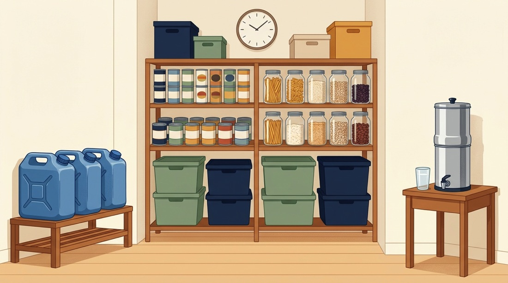
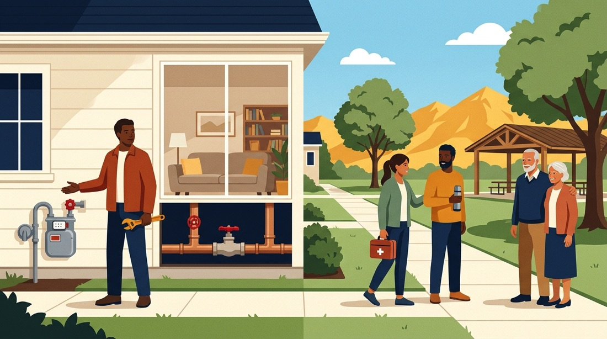

How This Plan Works: Family First, Ward Care, Stake Support
7 Wards + Riverview Branch • 1.0-Mile Operational RadiusJust Looking for Your Home & Family Prep?
Jump straight to the 4-Weekend Quick-Start, Water & Food Math, 72-Hour Kit, Senior/Renter tips, and printable Household Contact Card.
Ward or Stake Leader?
Access the 1-Page Ward Summary (Form W-0), Ministering Check-In Plan, Forms W-1–W-5, 12-Month Roadmap, and 7 Local Disaster Playbooks.
This Emergency Operations Plan gives families, Ward Councils, and Stake leaders of the Saratoga
Springs Utah Crossroads Stake a clear, practical playbook for preparing before a disaster and
caring for one another when utilities, roads, or communications fail. Grounded in General
Handbook 22.1.4 (living within a budget, minimizing debt, saving, education, and spiritual,
emotional, and temporal strength), preparedness is built from the home outward—never from the
top down. Plan Scope: This Operations Plan activates for community-wide or
infrastructure disruptions (GH 22.9.1.3); individual family crises (job loss, house fire,
protracted illness) route confidentially through normal Ward welfare and ministering
(GH 22.4–22.7).
Stake President & Stake Command: First-Hour Quick Card GH 22.9.1.3 • Simple Plan
- Secure Your Own Household First: Account for your family, gas/water hazards, and immediate neighbors.
- Authorize Building Safety Checks Before Entry: Direct High Council Facility Liaisons to visually inspect Building 1 (368 W Aspen Hills) & Building 2 (270 W Harvest Hills); if unsafe, shift command immediately to Shay Park Pavilion (516 W Aspen Hills).
- Connect With Bishops & Area Seventy: Activate Stake HAM net (147.340 / 145.230 / 146.520 MHz) or text/runners to receive anonymized Form W-5 status from all 7 Wards + Riverview Branch and report to the Area Seventy.
- Authorize Emergency Meetinghouse Use (
GH 35.5.5): Coordinate with Church Facilities Management (FM) and seek Area Presidency approval before opening any meetinghouse for overnight shelter (enforceGH 35.5zero-firearms policy on Church property). - Broker Cross-Ward Aid & Storehouse Orders: Pair unmet Ward needs with voluntary member pools first; submit emergency commodity requests with Bishops to Saratoga Springs Bishops' Storehouse (801-436-8205) & the Church Welfare and Self-Reliance Manager (WSRM).
Individual & Family Self-Reliance
Purpose: Every household sustains itself first so community help can reach those in acute danger.
- 72-hour grab-and-go kits + 2 weeks of water & food (building gradually, without debt).
- Medical power readiness: Auxiliary battery/generator plan if any member relies on electricity for oxygen, CPAP, or refrigerated meds.
- Know home gas, water, and breaker shut-offs and family gathering places.
Ward & Ministering Network
Purpose: Account for 100% of households and solve local needs quickly through established covenant relationships.
- Ministering-based check-ins (no call trees): Ministering brothers & sisters (backed by immediate street buddies) check on assigned households in person if networks are down.
- Maintain confidential local Special Needs register (Form W-1) and voluntary neighbor equipment list (Form W-2).
- Send anonymized summary (Form W-5) to Stake Command via HAM/FRS radio or runner.
Stake Council & Mutual Aid
Purpose: Step in when a Ward's local capacity is exceeded, manage shared facilities, and bridge to civil authorities.
- Inspect & operate shared hubs (Stake Center, Harvest Hills, Shay Park, Riverview Elementary).
- Coordinate cross-ward volunteer mutual aid (power stations, chainsaws, host homes, medical volunteers).
- Link to Saratoga Springs EOC/Fire/Police via HAM net (147.340 / 145.230 MHz) and submit Saratoga Springs Bishops' Storehouse orders.
How Accountability Works When Disaster Strikes (Ministering First — No Call Trees)
Traditional phone/call trees break immediately when cell towers saturate or power fails. Our Wards rely on the existing Elders Quorum and Relief Society Ministering structure—paired with immediate neighbor buddies—so every home is checked deliberately.
1 Secure Home
Check your household for injuries, gas smell, or structural hazards. Use your family gathering plan and out-of-town contact.2 Ministering Check-In
Once your own family is safe, check on your assigned ministering families and immediate next-door neighbors (on foot if phones are out).3 Report to EQ / RS
Ministering companions report status (Safe / Needs Help / Urgent Medical) to their District Supervisor or EQ/RS Presidency & Bishopric.4 Ward → Stake Rollup
Ward leadership addresses needs locally first, then sends anonymized Form W-5 counts & unmet mutual-aid requests to Stake Command.Designated Gathering, Reunification & Staging Locations
Know all five operational sites within our 1.0-mile radius before an emergency occurs. Meetinghouses must pass a visual safety inspection before anyone enters after an earthquake or severe storm.
Building 1: Aspen Hills Stake Center
Role: Primary Stake Command Post, HAM Radio Base, South Sector Hub
- Aspen Hills Ward
- Shay Park Ward
- Harvest Hills 10th Ward
- Saratoga Springs SA 11th Ward (YSA)
Building 2: Harvest Hills Meetinghouse
Role: Secondary Command Hub, North Sector Shelter & Staging (~0.8 mi NE)
- Harvest Hills 1st Ward
- Harvest Hills 8th Ward
- Crossroads Ward
Shay Park (Alternate Open-Air Hub)
Role: Open-Air Fallback Command, Triage Field & Helicopter LZ (0.2 mi W)
Riverview Elementary School
Role: Daytime Parent-Student Reunification Hub (Adjacent East • 385-579-7355)
Saratoga View Senior Living (Riverview Branch)
Role: Care Center Unit (~74–100 Beds • 385-430-1020)
3 Critical Realities of Our Geography
- West of Jordan River: Major earthquakes can compromise SR-73/2100 N bridges. Primary local ER is Intermountain Saratoga Springs (392 W Medical Dr)—no river crossing required.
- Lake Mountain & Redwood Rd (SR-68): Fast cheatgrass wildfires and hazmat freight share our primary corridor—know when to evacuate north vs. seal indoors.
- Untreated Secondary Water: Pressurized irrigation lines carry untreated Utah Lake water—never potable during culinary outages.
Volunteer Reality & Facility Storage Policy
Families start with what they have. As a volunteer organization on limited budgets, the Stake and Wards do not warehouse food, generators, fuel, or 55-gallon water barrels at meetinghouses. On-site building items are strictly limited to:
- Library FRS walkie-talkies (kept charged for building staff).
- Standard meetinghouse first-aid kits already mounted on site.
- Printed emergency binders & laminated radio frequency cards.
- A small emergency box of N95 particulate masks.
Any bulk preparedness drives coordinated by the Stake are optional group buys delivered directly to member homes (zero Church building storage).
Stake Leadership Roles (Supporting the Wards)
- Stake Presidency: Ecclesiastical direction, Area Seventy & Welfare/Self-Reliance
Manager liaison, emergency declarations,
GH 35.5.5meetinghouse shelter authorization, Stake Bishops' Council (GH 22.11) welfare alignment, and Saratoga Springs Bishops' Storehouse orders with Bishops. - High Council Liaisons:
- Facilities (Bldg 1 & 2): Building safety checks, library radios, FM liaison.
- Care Center: Saratoga View Senior Living & Riverview Branch mutual aid.
- Comms & Logistics: Stake HAM net (147.340 / 145.230 MHz), cross-ward sharing.
- Public Safety & Civil: Hospitals/ERs, Fire, Police, Red Cross, Public Works, Riverview Elementary.
- Stake Relief Society Presidency (
GH 22.9.3): Instructing & supporting Ward RS Presidencies, sister/family welfare & emotional/spiritual care, and Bishops' Storehouse welfare coordination. - Stake Welfare/Emergency Specialist or Working Group (
GH 22.9.4/22.10.2, optional): Assists with Form W-5 rollups, annual contact audits, HAM drills, and workshops so Stake leaders avoid burnout.
Meetinghouse Emergency Use & Safety Policy (General Handbook 35.5 & 35.5.5)
- Inspect & Authorize First: Members should not self-deploy to meetinghouses during a disaster without authorization. After earthquakes or severe storms, buildings must pass a visual safety check before entry.
- Overnight Shelter Approval (
GH 35.5.5): Overnight shelter in a meetinghouse is restricted except in emergencies—requiring Stake President authorization in coordination with Church Facilities Management (FM) and Area Presidency approval. - No Firearms or Lethal Weapons (
GH 35.5): Firearms and lethal weapons (including concealed weapons) are strictly prohibited on Church property, except by active law enforcement officers.
Disaster Review & Disruption Matrix
Guide Step 1 • Worksheet 1 (Page 5)Comprehensive review of the 7 localized disaster scenarios within the 1.0-mile operational perimeter of 368 W Aspen Hills Blvd. Evaluated across all 11 disruption categories defined in Church Emergency Planning Guide Step 1. Click "Deep Dive →" on any disaster to jump directly to its multi-horizon response plan in Tab 3.
1. Potential Disasters Comparison Grid
Comparative hazard summary detailing onset speed, warning intervals, duration, and operational disruption breadth.
| Hazard Scenario | Primary Threat Mechanism & Local Context | Onset & Warning | Duration | Disruptions | Action | Plan Reference |
|---|---|---|---|---|---|---|
|
1. Major Earthquake Wasatch Fault (M7.0+) |
Violent ground shaking, unreinforced masonry failure, gas line ruptures, severed culinary/sewer pipes, and bridge liquefaction isolating Saratoga Springs from I-15/Lehi. | Instantaneous 0 Warning |
Months to Years | 11 / 11 | See Section 3 (Worksheet 2A) | |
|
2. WUI Wildfire Lake Mountain Slope Fire |
Wind-driven foothill fire through cheatgrass into western subdivisions. Toxic smoke, mandatory evacuations for 3,000+ homes, Redwood Rd gridlock, and post-fire debris flows. | Rapid (15–60 min) Red Flag Alerts |
3–10 Days | 11 / 11 | See Section 3 (Worksheet 2B) | |
|
3. Severe Winter Blizzard Extended Grid Freeze |
Sub-zero temperatures (-10°F to 10°F), drifting snow blocking roads, multi-day blackout disabling forced-air furnaces, widespread burst pipes, acute hypothermia/CO risks. | Moderate (12–24h) NWS Warnings |
3–7 Days | 10 / 11 | See Section 3 (Worksheet 2C) | |
|
4. High Windstorm Downslope Microburst (70–90+ mph) |
Severe downslope gusts tearing off shingles, blowing out perimeter fences, lofting unanchored trampolines into 7,200V lines, blinding alkaline dust storms along SR-68. | Rapid (1–3h) High Wind Watch |
6–24 Hours | 9 / 11 | See Section 3 (Worksheet 2D) | |
|
5. Hazmat Tanker Plume SR-68 / Redwood Road Spill |
Commercial chemical tanker puncture releasing toxic inhalation vapor plume (chlorine/ammonia) drifting eastward into subdivisions. Mandatory shelter-in-place; travel lethal. | Instantaneous 0–5 min Siren |
4–12 Hours | 8 / 11 | See Section 3 (Worksheet 2E) | |
|
6. Culinary Water Failure Main Rupture & Backflow |
Regional supply main shear, booster pump failure, or Utah Lake secondary water backflow into culinary lines. Immediate depressurization and City-wide Boil Water orders. | Sudden 15–30 min Notice |
3–14 Days | 5 / 11 | See Section 3 (Worksheet 2F) | |
|
7. Widespread Disease Epidemic / Pandemic Outbreak |
High-virulence respiratory or infectious contagion sweeping large suburban households (4.2+ persons/home) and Saratoga View Senior Living. Clinic saturation and meeting pauses. | Gradual (Days–Weeks) Public Health Alert |
4–12 Weeks | 8 / 11 | See Section 3 (Worksheet 2G) |
2. Worksheet 1 (Page 5): Disaster vs. Disruption Matrix
Evaluation of all 7 disasters against the 11 functional disruption categories defined in Church Emergency Planning Guide Step 1.
| Likely Emergency / Disaster | 1. Food / Cooking | 2. Physical Safety | 3. Shelter / Clothing | 4. Church Facilities | 5. Comms | 6. Emotional / Spirit | 7. Heat / Cool | 8. Medical | 9. Power | 10. Water / Sewer | 11. Transport | Total |
|---|---|---|---|---|---|---|---|---|---|---|---|---|
| 1. Major Earthquake (M7.0+) | ✓ | ✓ | ✓ | ✓ | ✓ | ✓ | ✓ | ✓ | ✓ | ✓ | ✓ | 11 / 11 |
| 2. WUI Wildfire (Lake Mountain) | ✓ | ✓ | ✓ | ✓ | ✓ | ✓ | ✓ | ✓ | ✓ | ✓ | ✓ | 11 / 11 |
| 3. Severe Winter Blizzard | ✓ | ✓ | ✓ | — | ✓ | ✓ | ✓ | ✓ | ✓ | ✓ | ✓ | 10 / 11 |
| 4. High Windstorm / Microburst | — | ✓ | ✓ | ✓ | ✓ | ✓ | ✓ | ✓ | ✓ | — | ✓ | 9 / 11 |
| 5. Hazmat Tanker Plume (SR-68) | ✓ | ✓ | ✓ | ✓ | ✓ | ✓ | — | ✓ | — | — | ✓ | 8 / 11 |
| 6. Culinary Water Rupture | ✓ | ✓ | — | — | — | ✓ | — | ✓ | — | ✓ | — | 5 / 11 |
| 7. Widespread Disease Outbreak | ✓ | ✓ | ✓ | ✓ | ✓ | ✓ | — | ✓ | — | — | ✓ | 8 / 11 |
| COLUMN TOTALS (Disruption Frequency): | 6 | 7 | 6 | 5 | 6 | 7 | 4 | 7 | 4 | 4 | 6 | 62 |
Planning for Disruptions: Preparation & 3 Response Horizons
Guide Steps 2 & 3 • Worksheets 2A–2G (Pages 6A–6G)Every disaster playbook below begins with Preparation (Before the Disaster), then steps through Short-Term (0–72 Hours), Mid-Term (1–2 Weeks), and Long-Term (2+ Months). Within every phase, responsibilities follow our core principle: Individual & Family self-reliance first → Ward & Ministering neighborhood care second → Stake regional support third.
Worksheet 2A: Major Earthquake (Wasatch Fault Zone M7.0+)
Hazard Description & Operational Scenario 11 / 11 Disruption Categories
Scenario: Violent ground rupture along the Wasatch Fault Zone (M7.0–7.5) with zero warning. Causes structural/masonry failure, natural gas ruptures, severed culinary and sewer pipes, and multi-week grid failure. Soil liquefaction along the Jordan River and Utah Lake compromises bridge approaches on Pioneer Crossing (SR-73), 2100 North, and Redwood Road, isolating Saratoga Springs from Lehi/American Fork hospitals. Primary medical lifeline: Intermountain Saratoga Springs Emergency Services (392 W Medical Dr) on our side of the river.
Individual & Family (First)
- Anchor hazards: Strap water heaters to wall studs; secure tall bookcases/TVs; keep sturdy shoes and a flashlight beside every bed.
- Master utility shut-offs: Tether a non-sparking wrench at your gas meter; know your main water valve and how to isolate your 40–50 gal water heater.
- Store essentials: Maintain 72-hr kits, 2 weeks of water (14 gal/person) & food, a twin-bucket emergency toilet kit, and auxiliary medical battery power if anyone uses oxygen/CPAP.
- Set gathering plan: Designate an out-of-town contact and practice Drop, Cover, and Hold On.
Ward & Ministering (Second)
- Map ministering accountability (Form W-4): Ensure every household has active ministering companions and a nearby neighbor buddy who can check on foot.
- Survey special needs (Form W-1): Confidentially identify medical power/mobility needs and confirm whether each household has auxiliary power.
- Survey voluntary skills & gear (Forms W-2/W-3): Know who has medical training, chainsaws, camp stoves, or portable power stations.
- Teach preparedness: Use fifth-Sunday/quorum lessons to walk through the Member Prep Guide (Tab 9) without fear or extremism.
Stake Support (Third)
- Inspect seismic gas valves: High Council Facility Liaisons consult Church FM Group on seismic shut-offs and emergency power safety at Building 1 & 2.
- Verify gathering sites: Formalize Riverview Elementary reunification plan and Shay Park Pavilion / LZ staging with City Emergency Management.
- Maintain radio nets: Keep library FRS radios charged; hold periodic Stake HAM check-in nets (147.340 / 145.230 MHz).
- Optional group buys: Offer home-delivered gas wrenches, water containers, and twin-bucket workshops (zero building storage).
Individual & Family (First)
- Life safety & gas check: Evacuate damaged rooms; shut off gas meter only if you smell gas, hear hissing, or see the dial spinning.
- Preserve water & sanitation: Close the cold-water inlet to your water heater; observe "Do Not Flush" and switch to twin-bucket emergency toilets.
- Activate family plan: Text your out-of-town contact; check immediate next-door neighbors once your family is safe.
Ward & Ministering (Second)
- Ministering accountability sweep: Ministering companions walk to assigned homes (prioritizing Form W-1 medical/mobility households) and report status to EQ/RS & Bishopric.
- Local mutual aid first: Pair neighborhood volunteers with damaged homes, trapped items, or depleted medical batteries.
- Report to Stake: Transmit anonymized Form W-5 counts and urgent unmet needs to Stake Command via HAM, FRS Ch 3/5, or physical runner.
Stake Support (Third)
- Inspect buildings before entry: High Council Facility Liaisons visually inspect 368 W Aspen Hills & 270 W Harvest Hills; if compromised, shift Command & Triage immediately to Shay Park Pavilion (516 W Aspen Hills).
- Coordinate triage & routing: Stage volunteer first-aid station; route trauma west of the river to Intermountain Saratoga Springs ER (392 W Medical Dr).
- Bridge to civil agencies: High Council Comms & Public Safety Liaisons link with City EOC/UCARES and Riverview Elementary reunification.
Individual & Family (First)
- Transition to 2-week home stores: Use thawed freezer foods first on outdoor camp stoves/grills (strictly outdoors); conserve stored drinking water.
- Shelter safely: Do not sleep inside structurally red-tagged homes; coordinate temporary stay with relatives or Ward host families.
- Maintain hygiene: Follow strict handwashing and waste separation protocols to prevent illness.
Ward & Ministering (Second)
- Ongoing ministering care: Daily check-ins on displaced, injured, or elderly households; coordinate pooled neighborhood outdoor cooking.
- Match local needs: Pair families who have intact homes, generators, or chainsaws with neighbors needing shelter, battery charging, or debris clearing.
- Bishopric welfare assessment: Identify households whose food/water reserves are exhausted and submit needs to Stake Presidency.
Stake Support (Third)
- Bishops' Storehouse commodities: Stake Presidency & Bishops request bulk potable water, food, and blankets from Saratoga Springs Bishops' Storehouse (142 W Medical Dr • 801-436-8205 — west of Jordan River).
- Cross-ward host billeting & power hubs: Stake Relief Society coordinates host-family placement; High Council Logistics coordinates member-owned charging hubs for SN-1 medical devices and arterial debris crews.
Individual & Family (First)
- Document & rebuild: Photograph damage for insurance/FEMA claims; work with licensed structural contractors before major repairs.
- Care for emotional health: Practice healthy coping skills with children; ask for priesthood blessings or professional counseling when anxiety persists.
- Replenish gradually: Restock depleted water, food, and kit items line upon line.
Ward & Ministering (Second)
- Sustained ministering: Continue caring for grieving, displaced, or financially strained families long after headlines fade.
- Service & welfare: Organize ward rebuilding work days; Bishops administer fast-offering assistance and Family Services referrals as needed.
Stake Support (Third)
- Spiritual & trauma recovery: Stake Presidency oversees consolidated sacrament worship (outdoors or intact buildings) and coordinates LDS Family Services trauma/grief groups.
- After-action update: Stake Council documents bottlenecks and updates this plan and Ward Toolkit.
Worksheet 2B: WUI Wildfire (Lake Mountain Foothill Spread)
Hazard Description & Operational Scenario 11 / 11 Disruption Categories
Scenario: Wind-driven rangeland wildfire ignited on the slopes of Lake Mountain, fueled by dry cheatgrass and sagebrush (similar to the 2020 Knolls Fire). Pushed northeast by 30–50+ mph canyon winds into western subdivisions within 15–60 minutes. Generates intense radiant heat, wind-borne embers, hazardous PM2.5 smoke, and mandatory evacuation orders for 3,000+ homes with severe gridlock on Redwood Road (SR-68). Subsequent rainstorms create burn-scar debris flow and flash-flood hazards.
Individual & Family (First)
- Sign up for alerts: Enroll every adult phone in Utah County / Saratoga Springs Everbridge emergency alerts.
- Keep 72-hr go-bags by the exit: Include N95 masks, 2–3 weeks of prescriptions, pet carriers, leashes, meds & service-animal documentation (isolated seniors and singles often refuse evacuation without a pet plan!), waterproof documents/photos, and keep vehicle tanks at least half full during Red Flag season.
- Defensible space: Clear tall dry grass, weeds, firewood, and combustibles away from decks, eaves, and perimeter fences (Utah Guide p. 5).
- Know your exit & gathering spot: Plan primary (north toward Pioneer Crossing/SR-73) and alternate out-of-area family meeting points.
Ward & Ministering (Second)
- Identify evacuation rides (Form W-1): Know every non-ambulatory, elderly, or car-less household and pre-assign nearby ministering companions or neighbors with vans/SUVs.
- Keep Member Tools updated: Encourage every family to verify phone/email in Member Tools so ministering check-ins reach evacuated members out of town.
Stake Support (Third)
- Saratoga View mutual-aid plan: High Council Care Center Liaison maintains pre-agreed volunteer wheelchair-transfer protocol with Saratoga View nursing leadership.
- Inter-stake reception links: Stake Presidency maintains relationships with Lehi/American Fork Stakes for emergency host-family housing if our western wards evacuate.
- Annual tabletop drill: Practice Redwood Rd closure and multi-ward evacuation coordination with Saratoga Springs Police & Fire.
Individual & Family (First)
- Evacuate immediately when ordered: Close all windows/doors, turn off HVAC so smoke isn't pulled inside, grab 72-hr kits/meds/pets, and leave early—do not wait for flames.
- Protect lungs: Wear personal N95 masks in heavy smoke; keep vehicle AC on recirculate.
- Check in once safe: Notify your out-of-town contact and your ministering companion/EQ/RS once you reach safety.
Ward & Ministering (Second)
- Door-knock vulnerable neighbors: Before leaving safe zones, ministering companions verify elderly, sleeping, or non-ambulatory Form W-1 neighbors heard the evacuation order and have transport.
- Off-site accountability: Ministering companions confirm every assigned family's safe location via text/phone; Ward sends anonymized Form W-5 headcount and unmet lodging needs to Stake.
Stake Support (Third)
- Saratoga View manpower: High Council Care Center Liaison dispatches volunteer pairs to Saratoga View entrance for wheelchair transfers and memory-care perimeter safety strictly under facility nurse direction.
- Route & reception coordination: High Council Public Safety Liaison relays open Police corridors (routing north to Pioneer Crossing/SR-73); Stake opens safe reception staging and provides emergency library N95s to acutely vulnerable evacuees without masks.
Individual & Family (First)
- Wait for official all-clear: Do not attempt unauthorized re-entry past police checkpoints.
- Safe smoke cleanup: Upon return, replace HVAC filters (MERV-13), ventilate when outdoor air clears, and photograph any smoke/ash damage for insurance.
Ward & Ministering (Second)
- Sustained ministering care: Track displaced families' temporary addresses; deliver meals, laundry help, and comfort items.
- Local welfare requests: Bishops identify families needing clothing, hygiene kits, or infant supplies.
Stake Support (Third)
- Inter-stake host housing & Storehouse orders: Stake Presidency coordinates host lodging with Lehi/American Fork Stakes and submits clothing/hygiene/food orders to Saratoga Springs Bishops' Storehouse (801-436-8205).
- Re-entry & flood prep: High Council Public Safety & Logistics coordinate Police repopulation updates (801-766-6503) and volunteer sandbagging near Shay Park drainage ahead of post-fire storms.
Individual & Family (First)
- Rebuild & mitigate: Work with insurers/contractors; add ember-resistant vent mesh and maintain a 30-foot cleared defensible perimeter.
- Watch burn-scar weather: Stay alert for flash-flood warnings during heavy rain for 2–3 years post-fire.
Ward & Ministering (Second)
- Long-term companion support: Walk alongside families navigating leases, rebuilding, and emotional stress.
- Service days: Join neighborhood cleanups and defensible-space work mornings for elderly/widowed homeowners.
Stake Support (Third)
- Debris-basin service & counseling: High Council coordinates City-approved stormwater/culvert volunteer clearing near Shay Park; Stake Presidency coordinates LDS Family Services fire-trauma counseling.
Worksheet 2C: Winter Blizzard & Extended Grid Freeze
Hazard Description & Operational Scenario 10 / 11 Disruption Categories
Scenario: Severe arctic storm producing sub-zero temperatures (-10°F to 10°F) and 12–24+ inches of drifting snow. Icing or wind downs regional transmission lines, causing a 3–7 day power outage. Modern forced-air natural gas furnaces fail without electrical blower power, dropping indoor temperatures to freezing within 12–24 hours. Major secondary threats: hypothermia, carbon monoxide (CO) poisoning from unsafe indoor heaters/generators, and widespread burst water pipes upon thaw.
Individual & Family (First)
- Winterize home (Utah Guide p. 5): Caulk/weather-strip drafts, disconnect outdoor hoses, insulate vulnerable pipes, and know your main water shut-off valve.
- Prepare a "warm room" kit: Cold-rated sleeping bags, wool blankets, thermal layers, battery CO detector, and indoor-safe heating option (e.g., vented fireplace or indoor-rated catalytic heater with ventilation—never grills indoors).
- Auxiliary medical power: Households with SN-1 devices maintain charged lithium battery stations or outdoor inverter generator + fuel.
- Vehicle winter kit: Blanket, ice scraper, shovel, snacks, and traction sand in every car.
Ward & Ministering (Second)
- Identify cold-vulnerable homes (Form W-1): Flag isolated seniors, infants, and power-dependent medical households before winter begins.
- Know neighborhood helpers (Form W-2): Survey member-owned snowblowers, 4WD plow trucks, portable power stations, and homes with wood stoves/backup heat willing to host a cold neighbor.
Stake Support (Third)
- Consult FM on warming hubs: High Council Facility Liaisons verify with Church FM Group whether/how auxiliary heating or generator tie-ins are permitted at Building 1 & 2.
- Saratoga View winter contingency: High Council Care Center Liaison confirms Saratoga View's backup generator readiness and secondary warming protocol at 270 W Harvest Hills Blvd (~0.8 mi away).
Individual & Family (First)
- Consolidate into one "warm room": Close off unused rooms, hang blankets over doorways/windows, wear hats and dry layers, and sleep together in sleeping bags or a pitched indoor tent.
- Strict CO safety: NEVER run generators, charcoal grills, or camp stoves inside homes or garages (keep generators 20+ ft outside away from windows).
- Protect pipes: Open under-sink cabinets, trickle exterior-wall faucets, or shut off main water and drain lines if indoor temp approaches 35°F.
Ward & Ministering (Second)
- Twice-daily ministering checks: Ministering companions physically check isolated seniors, families with infants, and SN-1 oxygen/CPAP users.
- Neighbor warm-home sharing: Pair families whose homes are freezing with nearby member homes that have wood stoves, battery-backed gas fireplaces, or generators.
- Snow clearing for access: Clear walkways and driveways for elderly/medical households; send Form W-5 unmet needs to Stake.
Stake Support (Third)
- Activate warming hubs (if heated): High Council Facility Liaisons open 368 W Aspen Hills or 270 W Harvest Hills if grid power or FM-approved backup heat is operational; otherwise coordinate cross-ward warm-home billeting.
- Loan power stations & care center link: High Council Logistics routes voluntary 1000Wh+ power stations to SN-1 homes; Care Center Liaison verifies Saratoga View backup power status.
Individual & Family (First)
- Monitor the thaw closely: Stay home or turn off main water before temperatures climb above freezing; shut off water immediately if a burst pipe is heard.
- Dig out your hydrant & vents: Keep furnace/water-heater exhaust vents and nearby fire hydrants clear of snowdrifts (prevents CO backup).
Ward & Ministering (Second)
- Plumbing & snow-clearing pairs: Mobilize handy ward members to help elderly/widowed households shut off burst lines, cap pipes, and shovel access paths.
- Hot meal sharing: Ministering companions deliver hot soup or boiling water for infant formula to households still without utilities.
Stake Support (Third)
- Skilled plumbing & plow coordination: High Council Logistics pairs voluntary plumbers (Form W-3) and 4WD plows/snowblowers across wards to clear meetinghouse lots and assist severe pipe bursts.
- Hot meal staging & welfare: Stake Relief Society coordinates warm meal support at powered kitchens and Saratoga Springs Bishops' Storehouse commodities if needed.
Individual & Family (First)
- Prevent mold: Extract water, remove soaked carpet/pad, run fans/dehumidifiers, and file homeowner insurance claims promptly.
- Upgrade weak points: Add pipe insulation, heat tape, or a licensed generator interlock/battery backup before next winter.
Ward & Ministering (Second)
- Restoration service crews: Organize Saturday work teams to assist flooded homes with carpet removal, drywall flood-cuts, and cleanup.
- Fast-offering support: Bishops counsel with families facing unaffordable plumbing repairs or insurance deductibles.
Stake Support (Third)
- Shared drying gear & education: High Council Logistics connects voluntary air-movers/dehumidifiers across wards; Stake hosts a fall winterization & backup-power workshop.
Worksheet 2D: High Windstorm & Downslope Microburst (70–90+ mph)
Hazard Description & Operational Scenario 9 / 11 Disruption Categories
Scenario: Severe canyon winds and downslope microbursts descending from the Lake Mountains and Wasatch Front (70–90+ mph gusts). Strips roof shingles, collapses vinyl/wood fences, topples trees, and lofts unanchored trampolines into 7,200V power lines. Blinding alkaline dust storms off Utah Lake severely reduce visibility along Redwood Road (SR-68).
Individual & Family (First)
- Anchor backyard projectiles: Install 15-inch helical earth auger anchors on trampolines; secure patio furniture, sheds, and trash bins before High Wind Watches.
- Keep emergency patch supplies: Have a heavy tarp, duct tape, flashlights, and charged phone battery banks on hand (plus auxiliary medical power for SN-1 devices).
- Prune weak limbs: Trim dead branches overhanging roofs, driveways, and service drops.
Ward & Ministering (Second)
- Pre-storm reminders: When NWS issues a High Wind Warning, ministering companions help elderly or single-parent households secure outdoor items.
- Track local equipment (Form W-2): Know which ward members own chainsaws with safety PPE, extension ladders, and utility trailers.
Stake Support (Third)
- Facility readiness: High Council Facility Liaisons verify roof hatches, exterior doors, and dumpster enclosures at Building 1 & 2 are latched.
- Community anchoring awareness: Promote spring/fall trampoline anchoring reminders across Wards.
Individual & Family (First)
- Stay indoors away from windows: Shelter on interior/lower levels while winds exceed 50 mph; do not drive into alkaline dust clouds on Redwood Rd.
- Treat all downed wires as live: Stay 35+ feet away; report outages/downed lines immediately to Rocky Mountain Power (1-877-508-5088) and 911.
- Switch to backup power: Activate home battery backups for SN-1 oxygen/CPAP equipment if power drops.
Ward & Ministering (Second)
- Post-wind ministering check-in: Once gusts drop below 25 mph, ministering companions check assigned homes for roof punctures, broken glass, or power-dependent medical needs.
- Immediate roof tarping & local clearing (Work Crew Safety): Ward volunteers assist with safe ground clearing and low-risk roof tarping—strictly following Work Crew Safety Rules: (1) never climb steep, wet, or icy roofs (wait for licensed/insured pros); (2) always work in two-person buddy pairs; (3) zero youth operating chainsaws or climbing ladders; (4) confirm with Rocky Mountain Power that lines are de-energized before touching tangled trees.
Stake Support (Third)
- Arterial clearing & inspections: High Council Logistics coordinates member chainsaw crews (with PPE) to clear Aspen Hills Blvd and Riverview Elementary access; Facility Liaisons inspect Building 1 & 2 roofs and grounds.
- Medical power loans: Broker cross-ward portable battery station loans if outages extend past home battery capacity.
Individual & Family (First)
- Document for insurance: Photograph roof, siding, and fence damage before permanent removal; get written estimates from licensed contractors.
Ward & Ministering (Second)
- Fence & debris service parties: Mobilize ward trailer runs and work crews to haul wrecked trampolines/fences and repair perimeter fencing protecting kids and pets near busy streets.
Stake Support (Third)
- Multi-ward hauling & civic liaison: High Council Logistics coordinates municipal green-waste/dumpster drop info from City Public Works; Public Safety Liaison checks in with Riverview Elementary.
Individual & Family (First)
- Permanent repairs & anchoring: Complete licensed roofing/siding repairs and anchor all replacement trampolines/sheds with earth augers.
Ward & Ministering (Second)
- Advocacy for elderly/widowed: Ministering companions help vulnerable homeowners review contractor licenses and avoid predatory door-to-door scammers.
Stake Support (Third)
- Mitigation follow-through: Stake shares vetted wind-mitigation tips and encourages annual pruning near overhead drops.
Worksheet 2E: Hazmat Tanker Plume Spill (Redwood Road Corridor)
Hazard Description & Operational Scenario 8 / 11 Disruption Categories
Scenario: Multi-axle chemical tanker collision along SR-68 (Redwood Road) breaching bulk industrial chemicals (chlorine, anhydrous ammonia, or volatile solvents). Releases a dense toxic inhalation vapor cloud drifting eastward into subdivisions, Riverview Elementary (273 W Aspen Hills Blvd), and Stake meetinghouses. Outdoor air is immediately lethal—hard indoor Shelter-in-Place is strictly mandatory; driving outdoors into the plume can be fatal.
Individual & Family (First)
- Stage a quick-seal kit: Keep a roll of 4–6 mil plastic sheeting, duct/painter's tape, and scissors in a closet near an interior room with few windows (avoid basements for heavier-than-air gases like chlorine).
- Know HVAC shut-offs: Make sure adults and teens know how to turn off the thermostat fan, bathroom exhaust fans, and fireplace dampers immediately.
- Save Poison Control & alerts: Enable Wireless Emergency Alerts (WEA) and save Utah Poison Control (1-800-222-1222).
Ward & Ministering (Second)
- Educate parents ahead of time: Teach families that driving to Riverview Elementary during a hazmat plume puts both parent and child in lethal danger—schools are trained to seal classrooms.
- Identify non-English households (Form W-1 SN-8): Ensure ministering companions can relay urgent translated "Stay Indoors / HVAC Off" texts immediately.
Stake Support (Third)
- Meetinghouse HVAC shut-off labels: High Council Facility Liaisons identify and clearly label main air-handler/damper shut-offs at Building 1 & 2.
- School liaison: High Council Public Safety Liaison aligns communication procedures with Riverview Elementary Principal.
Individual & Family (First)
- Get inside & seal up NOW: Bring family and pets inside, lock windows/doors, turn OFF furnace/AC/exhaust fans, stuff wet towels under doors, and seal an upper/interior room with plastic & tape.
- DO NOT EVACUATE OR DRIVE TO SCHOOL: Remain sealed until Saratoga Springs Fire issues the official All-Clear.
- If exposed: Strip outer clothes into a sealed bag, flush eyes/skin with clean water 15 min, and call 911 / Utah Poison Control (1-800-222-1222).
Ward & Ministering (Second)
- Remote-only ministering check-ins: Because power and cell networks normally stay up, ministering companions check assigned households strictly by phone/text (NEVER go outside!) to confirm HVAC is off and no one is attempting to drive.
- Translate alerts immediately: Relay plain-language instructions to SN-8 language households.
Stake Support (Third)
- Seal meetinghouses (if occupied): High Council Facility Liaisons ensure Building 1 & 2 HVAC air-handlers are shut off and occupants stay indoors.
- Verify school lockdown: High Council Public Safety Liaison confirms Riverview Elementary status with administration and relays official Fire Hazmat updates via HAM net and Ward leaders.
Individual & Family (First)
- Cross-ventilate after All-Clear: Open opposite windows for 30 minutes once Fire Hazmat clears the neighborhood.
- Swap HVAC filter: Replace home furnace filter (MERV 11–13) so trapped chemical residue isn't recirculated.
- Monitor symptoms: Seek care at Intermountain Saratoga Springs ER or Holy Cross Mountain Point for lingering cough, wheezing, or eye irritation.
Ward & Ministering (Second)
- Post-incident ministering check-in: Check on asthmatic, elderly, and anxious households; help elderly residents swap furnace filters safely.
Stake Support (Third)
- Environmental clearance: High Council Civil Liaison confirms outdoor/garden water safety with Saratoga Springs Public Works; Stake Relief Society coordinates follow-up guidance for affected families.
Individual & Family (First)
- Practice a 10-minute drill: Walk children through shutting off fans and gathering calmly in your designated interior room.
Ward & Ministering (Second)
- Reassurance & pastoral care: Ministering companions check on families with lingering anxiety; Bishops provide Family Services counseling referrals if needed.
Stake Support (Third)
- Civic monitoring & review: High Council Civil Liaison monitors City/MAG hazmat routing updates along SR-68 and updates school reunification lessons.
Worksheet 2F: Culinary Water Rupture & Contamination
Hazard Description & Operational Scenario 5 / 11 Disruption Categories
Scenario: Regional culinary water main shear, booster pump failure, or backflow cross-contamination where untreated Utah Lake secondary irrigation water enters potable lines. Depressurization triggers mandatory City-wide Boil Water orders due to waterborne pathogens (E. coli, Cryptosporidium). Retail bottled water sells out within 2 hours.
Individual & Family (First)
- Store water (Utah Guide p. 12): Start with 3 days (1 gal/person/day) and build toward 2 weeks (14 gal/person) in sturdy, food-grade containers (never used milk/juice jugs; keep off cement and out of sun).
- Keep a purification backup: Store a quality water filter (e.g., hollow-fiber/gravity filter) or unscented household bleach for emergency disinfection.
- Know your valves: Know how to isolate your 40–50 gal water heater and verify your home has zero illegal cross-connection with secondary irrigation water.
Ward & Ministering (Second)
- Identify infant/medical households (Form W-1 SN-7/SN-4): Know which families depend on infant formula or home dialysis so they receive priority safe water immediately.
- Survey neighborhood filters (Form W-2): Know which members own high-capacity gravity filters or large potable water containers willing to share.
Stake Support (Third)
- Public Works liaison: High Council Logistics maintains direct contact with Saratoga Springs Public Works Emergency Dispatch (801-404-2468).
- Education & optional group buys: Host water-filtration workshops and optional home-delivered water container group buys (zero Church building storage).
Individual & Family (First)
- Boil 3 full minutes: At Saratoga Springs' 4,500 ft elevation, bring questionable tap water to a rolling boil for 3 full minutes before drinking, cooking, or brushing teeth.
- NEVER drink secondary irrigation water: Secondary lines carry untreated Utah Lake water—unfit for drinking or food prep.
- Use home stores first: Tap stored drinking water and isolate your water heater (close cold inlet) if mains depressurize.
Ward & Ministering (Second)
- Priority ministering water drops: Ministering companions immediately check Form W-1 households (formula-fed infants, dialysis patients, elderly alone) and share bottled/boiled water locally.
- Report shortages: Send anonymized Form W-5 potable water deficits to Stake Command.
Stake Support (Third)
- City liaison & rapid updates: High Council Civil/Logistics Liaisons coordinate with Public Works Urgent Dispatch (801-404-2468) and push verified boil-order updates to all Wards.
- Cross-ward water sharing: Stake Relief Society matches unmet infant/elderly water needs with voluntary member supplies or initial Storehouse pallets.
Individual & Family (First)
- Refill sanitized jugs: Bring clean personal containers to designated City or Stake distribution points.
- Flush home lines after clearance: Once Public Works clears the boil order, flush cold faucets 5+ minutes, discard ice-maker ice, and replace refrigerator/sediment filters.
Ward & Ministering (Second)
- Delivery & flushing help: Ministering companions haul refill jugs for elderly/homebound members and help flush water heaters and replace sediment filters after clearance.
Stake Support (Third)
- Bulk water staging: Stake Presidency coordinates with City Emergency Management and Saratoga Springs Bishops' Storehouse (801-436-8205) to stage potable water tankers or canned water pallets at 368 W Aspen Hills Blvd.
- Sanitation stations: High Council Facility Liaisons coordinate handwashing setups at distribution hubs.
Individual & Family (First)
- Close your water gap: Rotate stored water, add containers toward a 2-week supply, and practice using your home water filter.
Ward & Ministering (Second)
- Hands-on ward classes: Teach simple, budget-friendly water storage (using the Member Prep Guide, Tab 9) during relief society/quorum activities.
Stake Support (Third)
- Optional home-delivered group buy & demos: High Council Logistics & Stake Relief Society sponsor optional home-delivered water container group buys (zero building storage) and gravity-filter demonstrations.
Worksheet 2G: Widespread Disease Outbreak & Epidemic / Pandemic
Hazard Description & Operational Scenario 8 / 11 Disruption Categories
Scenario: High-virulence respiratory virus or infectious outbreak spreading rapidly through large suburban households (avg 4.2+ persons/home) and threatening medically frail residents at Saratoga View Senior Living (Riverview Branch). Clinics and ERs face bed/staffing shortages; public health authorities issue quarantine advisories; in-person worship is modified or paused under Area Seventy/Stake Presidency direction. Boundary: The Church does not operate medical clinics or store pharmaceuticals—the home is the first line of care.
Individual & Family (First)
- Maintain a home sick-room kit: Fever reducers (adult & pediatric acetaminophen/ibuprofen), oral electrolytes, broths/crackers, working thermometer, pulse oximeter (if available), disposable/N95 masks, soap, and disinfectant wipes.
- Prescription & food buffer: Keep a 2–3 week buffer of routine prescriptions and 2 weeks of normal shelf-stable groceries.
- Financial readiness (Utah Guide p. 19): Build gradually toward a 1-month emergency fund to buffer unpaid sick leave.
Ward & Ministering (Second)
- Keep ministering lists current: Ensure every isolated senior, single parent, and immunocompromised member (Form W-1) has active ministering companions with current phone/text info in Member Tools.
- Virtual broadcast readiness: Verify Ward technology specialists can stream sacrament/meetings smoothly if needed.
Stake Support (Third)
- Public health & care-center links: High Council Public Safety & Care Center Liaisons maintain direct contacts with Utah County Health Dept (801-851-7000) and Saratoga View nursing leadership.
- Maintain library emergency N95 box: Keep a small sealed box of N95 masks at Building 1 & 2 for acute volunteer/leadership safety.
Individual & Family (First)
- Isolate early at home: Set up a dedicated sick bedroom (and separate bathroom if possible), crack windows for ventilation, designate one healthy caregiver wearing a mask, and stay home when symptomatic.
- Know red-flag symptoms: Seek emergency care (911 or Intermountain Saratoga Springs ER) for trouble breathing, persistent chest pain, confusion, or blood oxygen (SpO2) below 92%.
Ward & Ministering (Second)
- Contactless ministering check-ins: Ministering companions reach out by phone/text/video to identify sick or quarantined homes needing doorstep groceries, meals, or pharmacy pickups.
- Home-centered worship: Bishops communicate authorized home-sacrament and virtual broadcast links under Stake/Area direction.
Stake Support (Third)
- Worship & public health direction: Stake Presidency (with Area Seventy) directs any pause/modification of in-person meetings; High Council Public Safety Liaison monitors Utah County Health guidance.
- Shield Saratoga View: High Council Care Center Liaison confirms facility lockdown and enforces zero in-person visits until cleared by facility medical staff.
Individual & Family (First)
- Ask for help early: Let your ministering companions or Relief Society/Elders Quorum know if everyone in your home is too ill to cook or pick up prescriptions.
- Protect mental health: Keep daily prayer, hydration, rest, and regular video calls with loved ones.
Ward & Ministering (Second)
- Porch-drop care network: Ministering companions and ward volunteers leave hot meals, groceries, and prescriptions on porches with a text notification (zero face-to-face contact).
- Daily isolated checks & welfare: Phone/video check-ins for isolated seniors and single parents; Bishops submit Bishops' Storehouse orders for wage-disrupted families.
Stake Support (Third)
- Storehouse & loaner coordination: Stake Presidency & Relief Society coordinate Saratoga Springs Bishops' Storehouse (801-436-8205) commodities and voluntary member pulse-oximeter loans across wards.
- Facility sanitization: High Council Facility Liaisons oversee FM-aligned cleaning and air-filter replacement at Building 1 & 2 before re-opening.
Individual & Family (First)
- Replenish home kits: Restock OTC medications, masks, disinfectants, and pantry items as retail shelves normalize.
- Seek healing support: Reach out to your Bishop or Family Services if grief, anxiety, or post-illness exhaustion persists.
Ward & Ministering (Second)
- Bereavement & re-engagement: Ministering companions lovingly support grieving families and members hesitant to return to in-person gatherings.
Stake Support (Third)
- Phased return & community service: Stake Presidency directs phased return to assembly per Church/public health guidance, coordinates LDS Family Services grief resources, and hosts Red Cross/ARUP blood drives once cleared.
Special Needs Master Rollup & Support Matrix
Guide Step 4 • Worksheet 3 (Page 7)Two-Tier Privacy Standard: No Member Names Stored at Stake Level
Personal member names, physical addresses, and specific medical diagnoses are strictly confidential and protected under Church privacy protocols. Detailed individual surveys are conducted and secured exclusively within local Ward emergency binders using Form W-1 (Ward Special Needs Survey)—including verifying whether each power-dependent member already has auxiliary backup power. The Stake Plan maintains only an anonymized numerical rollup and support register aggregated from Ward Form W-5 submissions.
Special Needs Categories & Three-Tier Support Standard (SN-1 to SN-8)
| Code | Special Need | Family Preparation (First) | Ward & Ministering (Second) | Stake Support (Third) |
|---|---|---|---|---|
| SN-1 | Electrical Life-Support Oxygen, CPAP, ventilator, feeding pump |
Maintain auxiliary battery station (500–1000Wh+) or generator sized for device wattage; submit Rocky Mountain Power Medical Certificate ↗. | Record wattage & aux-power gap on Form W-1; ministering companion checks within first 2 hours of blackout. | Broker voluntary cross-ward loans of member 1000Wh+ power stations or open charging hub; call Fire (801-766-6505) if critical. |
| SN-2 | Cold-Chain Medication Insulin, biologics needing cooling |
Keep insulated med pouch + frozen gel packs ready for 4+ hr outages; maintain 2–3 week prescription buffer. | Ministering companion checks temperature status during >4 hr outages in summer heat (>90°F). | Stake Relief Society opens labeled cooler/ice station at meetinghouse kitchens using member coolers. |
| SN-3 | Non-Ambulatory / Mobility Wheelchair-bound, bedridden |
Keep backup manual wheelchair/transfer aids and a ready 72-hr go-bag near the exit. | Pre-assign nearby ministering companions / neighbors with accessible vans or lift pairs for rapid evacuation. | Coordinate cross-ward accessible transport and Saratoga View Senior Living volunteer wheelchair pairs (under nurse direction). |
| SN-4 | Dialysis / Critical Outpatient Rigid hospital therapy schedules |
Maintain renal emergency diet supply and written clinic contact/backup schedule in emergency documents. | Ministering check-in to confirm treatment continuity and local ride needs. | Coordinate bridge-status routing (west of river to Intermountain Saratoga Springs ER or Shay Park LZ if severed). |
| SN-5 | Isolated Seniors / Memory Care Living alone, dementia, cognitive risk |
Share emergency contact card with family & Bishopric; keep medical ID bracelet if prone to wandering. | Immediate in-person ministering check-in for safety, warmth, water, and reassurance. | Coordinate warm-home/shelter support and Saratoga View exterior perimeter sentries under staff direction. |
| SN-6 | Sensory / Neurodivergent Autism, severe sensory sensitivity |
Pack personal noise-canceling headphones, comfort items, and familiar snacks in 72-hr kit. | Ministering companion shares family's calming preferences when assisting with shelter or evacuation. | Designate quiet, low-stimulus classroom spaces at Building 1 & 2 when shelters open. |
| SN-7 | Infants, Expectant/Postpartum Moms & Solo Parents Formula, newborn care, postpartum recovery, solo caregivers |
Store 2-week supply of ready-to-feed or powdered formula, diapers, wipes, dedicated clean drinking water, and postpartum/newborn comfort supplies. | Priority ministering check-in for water/boiling drops, quiet porch-drop meals, and backup care if a spouse is stranded across the river. | Submit emergency formula/water requests to Saratoga Springs Bishops' Storehouse when family/ward supply runs low. |
| SN-8 | Language / Communication Non-English, deaf, or hard of hearing |
Save translated emergency alert apps and family contact cards. | Pair bilingual ministering companions or neighbors to relay clear alerts in person/text. | Distribute translated Stake emergency bulletins (Spanish, Portuguese, and other Ward languages). |
Stake 7-Ward Anonymized Special Needs Rollup Matrix
Aggregated across all 7 Wards + Riverview Branch from Ward Form W-5 returns. Brackets indicate open survey slots awaiting Ward returns.
| Ward / Care Unit | Meetinghouse | SN-1 Oxygen |
SN-2 Insulin |
SN-3 Mobility |
SN-4 Dialysis |
SN-5 Isolated |
SN-6 Sensory |
SN-7 Infant |
SN-8 Language |
Status |
|---|---|---|---|---|---|---|---|---|---|---|
| Aspen Hills Ward | 368 W Aspen Hills | [ ___ ] | [ ___ ] | [ ___ ] | [ ___ ] | [ ___ ] | [ ___ ] | [ ___ ] | [ ___ ] | Awaiting W-5 |
| Shay Park Ward | 368 W Aspen Hills | [ ___ ] | [ ___ ] | [ ___ ] | [ ___ ] | [ ___ ] | [ ___ ] | [ ___ ] | [ ___ ] | Awaiting W-5 |
| Harvest Hills 10th Ward | 368 W Aspen Hills | [ ___ ] | [ ___ ] | [ ___ ] | [ ___ ] | [ ___ ] | [ ___ ] | [ ___ ] | [ ___ ] | Awaiting W-5 |
| Saratoga SA 11th (YSA) | 368 W Aspen Hills | [ ___ ] | [ ___ ] | [ ___ ] | [ ___ ] | [ ___ ] | [ ___ ] | [ ___ ] | [ ___ ] | Awaiting W-5 |
| Harvest Hills 1st Ward | 270 W Harvest Hills | [ ___ ] | [ ___ ] | [ ___ ] | [ ___ ] | [ ___ ] | [ ___ ] | [ ___ ] | [ ___ ] | Awaiting W-5 |
| Harvest Hills 8th Ward | 270 W Harvest Hills | [ ___ ] | [ ___ ] | [ ___ ] | [ ___ ] | [ ___ ] | [ ___ ] | [ ___ ] | [ ___ ] | Awaiting W-5 |
| Crossroads Ward | 270 W Harvest Hills | [ ___ ] | [ ___ ] | [ ___ ] | [ ___ ] | [ ___ ] | [ ___ ] | [ ___ ] | [ ___ ] | Awaiting W-5 |
| Riverview Branch (Care) | Saratoga View Senior | [ ___ ] | [ ___ ] | [ ___ ] | [ ___ ] | [ ___ ] | [ ___ ] | [ ___ ] | [ ___ ] | Awaiting W-5 |
| STAKE TOTAL ROLLUP | All Locations | [ _____ ] | [ _____ ] | [ _____ ] | [ _____ ] | [ _____ ] | [ _____ ] | [ _____ ] | [ _____ ] | Master Register |
Category Legend: SN-1: Life-Support/Oxygen • SN-2: Cold-Chain/Insulin • SN-3: Non-Ambulatory • SN-4: Dialysis • SN-5: Isolated Elderly • SN-6: Autism/Sensory • SN-7: Infants/Expectant-Postpartum/Solo Parents • SN-8: Language Barrier.
Stake Capability Support Protocols (Self-Reliance & Shared EQ/RS Mutual Aid)
Because our wards operate with limited budgets, families start with what they have. When localized needs exceed home resources, Stake leadership coordinates the following compassionate mutual-aid protocols (splitting heavy physical logistics with Elders Quorum/High Council Logistics and care coordination jointly with Relief Society):
- Electrical Life-Support: If home battery units deplete during extended power failures, High Council Logistics & Ward EQ coordinate volunteer loans of member-owned portable power stations or open an FM-cleared meetinghouse charging hub to recharge oxygen/CPAP devices.
- Insulin Cold-Chain Preservation (Joint EQ + RS): If power outages exceed 4 hours in summer heat (>90°F), EQ & High Council Logistics haul heavy coolers, ice, and backup power to meetinghouse kitchens while RS & EQ volunteers jointly staff the labeled medication check-in table (using private codes).
- Jordan River Bridge Severance: If SR-73 (Pioneer Crossing) or 2100 North bridges are compromised by earthquake liquefaction, all trauma cases are re-routed strictly to Intermountain Saratoga Springs Emergency Services (392 W Medical Dr) on our side of the river.
Dedicated Institutional Protocol: Saratoga View Senior Living & Riverview Branch
Saratoga View Senior Living (1429 N Utah Cottage Dr • Phone: 385-430-1020)
This 74–100 bed assisted living and memory care facility represents the highest density of vulnerable seniors within our stake boundaries. The Church maintains the Riverview Branch directly within this facility to minister to residents.
- Legal Boundary & Zero Church Liability: Saratoga View is a private, state-regulated healthcare facility with licensed nursing staff. The Church and Stake do not assume medical liability, diagnostic responsibility, or facility command. The Stake's role is strictly External Mutual-Aid, Pastoral Support, and Volunteer Evacuation Manpower.
- Designated Stake Lead: High Council Care Center Liaison: Maintains ongoing coordination with the facility Executive Director and Director of Nursing.
- Emergency Volunteer Evacuation Support: In a declared wildfire or chemical evacuation, the High Council Liaison coordinates volunteer pairs to report to the facility entrance to assist staff with rolling wheelchairs and moving luggage strictly under the direction of facility nurses.
- Memory Care Sentry Perimeter: If emergency alarms release magnetic security doors, volunteer adult sentries are positioned along exterior perimeter fence lines to assist staff in preventing disoriented memory care residents from wandering into smoke or Redwood Road traffic.
- Auxiliary Warm-Site Shelter: If facility emergency power fails during extended sub-zero weather, the Stake Presidency coordinates emergency warming shelter staging at the Harvest Hills Meetinghouse (270 W Harvest Hills Blvd) ~0.8 mi away.
Stake Resource Matching & Communications Register
Guide Step 4 • Worksheet 4 (Page 8)Core Operational Role: Connecting Unmet Needs to Real Local Resources
The Stake is not a warehouse and does not own heavy equipment, generators, or food stockpiles. Aside from our two meetinghouses (and minimal library radios/first-aid kits/N95 box), our real resources are what members already own and are willing to share plus local civic & Church lifelines. In an emergency, the Stake's primary job is matchmaking: taking an unmet need reported by a Ward on Form W-5 and rapidly connecting it to the nearest willing neighbor, safe facility space, or external agency.
1. Our Buildings & Grounds
Space for command, triage, shelter, kitchens, parking/staging, and quiet sensory rooms (Building 1, Building 2, plus Shay Park fallback). On-site gear is strictly minimal: charged library FRS radios, standard first-aid kits, printed binders, and one N95 box.
2. Member Skills & Voluntary Gear
Privately owned items & licenses voluntarily listed by Wards (Forms W-2/W-3): portable power stations, camp stoves, chainsaws, 4WD plows, gravity filters, medical professionals, plumbers, electricians, and licensed HAM operators.
3. Local Lifelines (West of River)
Saratoga Springs Bishops' Storehouse (142 W Medical Dr • 801-436-8205), Intermountain Saratoga Springs ER (392 W Medical Dr • 801-763-3500), Saratoga Springs Fire/Police/Public Works, and Red Cross.
Live "Need → Resource" Matching Playbook (Use During an Incident)
When a Ward reports an unmet need on Form W-5, follow the row from left to right—always matching the closest Ward/neighbor resource first before escalating to civil agencies.
| Unmet Need Reported (Form W-5) | Step 1: Ward / Neighbor Match | Step 2: Stake Cross-Ward / Facility Match | Step 3: External / Civil Escalation |
|---|---|---|---|
| SN-1 Power Running Out Oxygen concentrator, CPAP, medical device |
Borrow nearby member's portable lithium power station (Form W-2) or inverter generator. | Match a 1000Wh+ battery station from an adjacent Ward; or recharge batteries at a powered meetinghouse hub (per FM guidelines). | Call Saratoga Springs Fire (801-766-6505 / 911) for priority medical transport to Intermountain ER. |
| SN-2 Insulin / Meds Warming Power out >4 hrs in heat |
Place in neighbor's generator-backed fridge or home cooler with ice packs. | Stake Relief Society opens labeled cooler/ice station in Building 1 or 2 kitchen using member-loaned coolers. | Coordinate with local pharmacy or Intermountain Saratoga Springs ER (801-763-3500). |
| SN-3 Evacuation / Lift Help Wheelchair / non-ambulatory / Saratoga View |
Pre-assigned ministering companion or neighbor with accessible van / SUV. | Dispatch cross-ward volunteer lift pairs (for Saratoga View, report to entrance strictly under facility nurse direction). | Request paratransit / Fire EMS assistance via City Emergency Mgmt (801-766-9793 Ext. 219). |
| No Safe Water / Infant Formula (SN-7) | Share neighbor stored drinking water, isolated 40–50 gal water heater, or gravity filter (Form W-2). | Stake Presidency & Bishops request emergency canned water & formula from Saratoga Springs Bishops' Storehouse (801-436-8205); stage in Building 1 lot. | Coordinate municipal water trailer with City Public Works Urgent Line (801-404-2468). |
| Displaced, Red-Tagged, or Freezing Home | Short-term stay with intact/heated neighbor home within the same Ward. | Stake Relief Society matches cross-ward host families; open Building 1 or 2 (if structurally cleared & heated) or Shay Park tents. | Coordinate regional sheltering with American Red Cross (801-373-8580) or neighboring Stakes. |
| Blocked Street, Burst Pipe, or Roof Breach | Ward member chainsaw crew (with PPE), handy plumber (PEX/SharkBite), or ladder/tarp team (Forms W-2/W-3). | Stake brokers cross-ward skilled trades (electricians, plumbers, 4WD snowplows, trailers) to priority streets & elderly homes. | Report arterial blockages / gas leaks / downed lines to Public Works, Enbridge Gas (1-800-767-1689), or RMP (1-877-508-5088). |
| Trauma / Medical Surge | Good Samaritan stabilization by Ward MD/RN/EMT volunteer (Form W-3) using home/building first-aid kits. | Open outdoor triage canopy at Building 1/2 parking lot or Shay Park Pavilion; keep quiet classroom for SN-6 sensory needs. | Transport immediately to Intermountain Saratoga Springs ER (392 W Medical Dr)—west of Jordan River. |
Cross-Ward Voluntary Resource Pool (Populated from Ward Form W-5)
Only tracks the six high-leverage voluntary capabilities worth brokering across Ward lines. Individual owner names remain private inside each Ward's Forms W-2 & W-3—Stake leaders call the Ward contact to connect the volunteer directly to the need.
| Ward / Unit | Power Stations / Inverters | Medical Pros (MD/RN/EMT) | Active HAM Operators | Plumbers / Electricians | Chainsaws / Plows / Trailers | Gravity Water Filters |
|---|---|---|---|---|---|---|
| Aspen Hills Ward | [ ___ ] | [ ___ ] | [ ___ ] | [ ___ ] | [ ___ ] | [ ___ ] |
| Shay Park Ward | [ ___ ] | [ ___ ] | [ ___ ] | [ ___ ] | [ ___ ] | [ ___ ] |
| Harvest Hills 10th Ward | [ ___ ] | [ ___ ] | [ ___ ] | [ ___ ] | [ ___ ] | [ ___ ] |
| Saratoga SA 11th (YSA) | [ ___ ] | [ ___ ] | [ ___ ] | [ ___ ] | [ ___ ] | [ ___ ] |
| Harvest Hills 1st Ward | [ ___ ] | [ ___ ] | [ ___ ] | [ ___ ] | [ ___ ] | [ ___ ] |
| Harvest Hills 8th Ward | [ ___ ] | [ ___ ] | [ ___ ] | [ ___ ] | [ ___ ] | [ ___ ] |
| Crossroads Ward | [ ___ ] | [ ___ ] | [ ___ ] | [ ___ ] | [ ___ ] | [ ___ ] |
| STAKE VOLUNTARY POOL TOTAL | [ ____ ] | [ ____ ] | [ ____ ] | [ ____ ] | [ ____ ] | [ ____ ] |
3 Simple Rules for Brokering Member Resources & Work Crew Safety
- Protect Privacy (
GH 22.4.5): Wards keep owner names/addresses confidential on Forms W-2/W-3; Stake asks a Ward leader to connect a willing volunteer. - Match Closest First & Log Returns: Solve needs inside the neighborhood first; tag loaned power stations, coolers, or pulse oximeters with the owner's name/phone.
- Work Crew Safety Rules: Always work in two-person buddy pairs; never climb steep, wet, or icy roofs; zero youth operating chainsaws or ladders; confirm Rocky Mountain Power de-energized downed lines before touching tangled limbs.
- Meetinghouse Policy (
GH 35.5 / 35.5.5): Overnight shelter requires Stake President, FM, and Area Presidency approval; zero firearms/weapons on Church property.
5-Point Host-Family & Porch-Drop Checklist (Joint EQ + RS)
Share physical/driving/hauling work with Elders Quorum and caregiving check-ins jointly with Relief Society. Before placing a displaced household in a volunteer host home or running porch-drop meals, verify:
- Allergies & Medical Needs: Food allergies, chemo/infant diet, or SN-1 medical power.
- Mobility & Stairs: Main-floor bedroom/bathroom access for seniors or wheelchairs.
- Pets & Service Animals: Confirm pet compatibility upfront (don't separate seniors from pets!).
- Clear Duration & Check-In: Agree on a realistic 24–72 hr initial window and Ward point of contact.
- Privacy & Dignity: Text before porch drops; never broadcast household details in group chats.
Dual-Tier Emergency Radio & Ministering Communications Network
No Call Trees: Ward household check-ins run through Elders Quorum & Relief Society Ministering companionships (in person on foot if networks fail, or phone/text when intact). Radios below connect on-site facilities, Wards, Stake Command, and County EOC when cellular towers are down.
Tier 1: Stake Amateur Radio (HAM) Net
| Frequency | Offset / Tone | Operational Role |
|---|---|---|
| 147.340 MHz | +0.6 MHz (PL 100.0 Hz) | Utah County ARES (UCARES): Primary linked repeater for Church Welfare Area Net and County EOC. |
| 145.230 MHz | -0.6 MHz (PL 131.8 Hz) | Lake Mountain North Repeater: Secondary repeater for inter-stake traffic and ward check-in nets. |
| 146.520 MHz | Simplex (No tone) | National Calling Simplex: Off-grid direct contact between Building 1 and Building 2 if repeaters fail. |
Tier 2: Building Library Walkie-Talkies & Ward Family Radios
| Channel | Frequency | Designated Purpose |
|---|---|---|
| Library Walkie-Talkies | FRS Channel 1 | On-Site Facility Coordination: Kept charged in Building 1 & 2 libraries for building safety, parking, and shelter staff. |
| Ward Channel 1 | 462.5625 MHz | General Family Net: Initial family check-in and neighborhood status calls. |
| Ward Channel 3 | 462.6125 MHz | Ward Operations Net: Damage assessment, physical safety, and logistics. |
| Ward Channel 5 | 462.6625 MHz | Ward Welfare Net: Special needs verification and vulnerable member care. |
Critical Information: Verified Emergency Services Directory
Guide Step 4 • Worksheet 5 (Page 9)100% verified emergency contact directory for municipal public safety, hospitals, utility lifelines, and Church welfare resources. Church contacts reflect strictly Stake-level roles.
Emergency Medical Facilities & Trauma Centers
Intermountain Saratoga Springs Emergency Services (801) 763-3500
Westlake Emergency Center (MountainStar) (385) 338-2600
Holy Cross Hospital – Mountain Point (385) 345-3000
Primary Children's Hospital (Miller Campus) (385) 531-1200
American Fork Hospital (Intermountain Health) (801) 855-4600
Utah County Health Department & Emergency Mgmt (801) 851-7000
Municipal Public Safety & Public Works
Saratoga Springs Fire Dept (North Station) 911 / (801) 766-6505
Saratoga Springs Police Department Dispatch: (801) 798-5600
City Public Works (Water & Sewer Dispatch) Urgent: (801) 404-2468
City Emergency Management (801) 766-9793 Ext. 219
Church Welfare, Gathering Sites & Utility Lifelines
Saratoga Springs Bishops' Storehouse & Home Storage (801) 436-8205
Shay Park (Alternate Open-Air Hub & LZ) (801) 766-9793
Saratoga View Senior Living & Riverview Branch (385) 430-1020
Riverview Elementary School (385) 579-7355
American Red Cross (Central & Southern Utah) (801) 373-8580
Public Utility Emergency Hotlines 24/7 Hotlines
Personal Crisis, Mental Health & Self-Reliance Lifelines (GH 22.12–22.13)
988 Suicide & Crisis Lifeline Call or Text 988
211 Utah & Utah Workforce Services Dial 211
Deseret Industries & Church Employment / Self-Reliance (801) 436-8210
Church Abuse Help Line (Bishops & Stake Presidents Only) 1-800-453-3860
Ecclesiastical & Church Support Contacts (Fill In Locally — Physical Binder)
Keep personal/direct Church leader numbers in your printed Stake/Ward binder and Member Tools rather than publishing private cell numbers online.
| Ecclesiastical / Church Support Role | Current Name | Phone / Radio / Email |
|---|---|---|
| Area Seventy | ||
| Coordinating Council Chair | ||
| Church Welfare & Self-Reliance Manager (WSRM) | ||
| Church Facilities Management (FM) Manager |
Stake Action Items & Practice Frequency Cadence
Guide Step 5 • Worksheet 6 (Page 10)Focused, realistic action items designed for unpaid volunteer leaders on limited budgets. The
Responsible and Target Due columns are intentionally left blank so the Stake
Council can assign owners (including an optional Stake Welfare/Emergency Specialist per
GH 22.9.4 or small working group per GH 22.10.2) and align Bishops in Stake
Bishops' Council (GH 22.11).
| Target Due | Action Item & Operational Purpose | Responsible | What "Done" Looks Like |
|---|---|---|---|
| Phase 1 — Immediate Foundations (Launch the Operating Model) | |||
| [ _____ ] | 1. Approve Plan, Gathering Sites & Practice Cadence Formally approve Building 1, Building 2, Shay Park (open-air fallback/LZ), and Riverview Elementary (school reunification), along with the Stake/Ward/Family practice rhythm below. |
Approved in Stake Council minutes; gathering sites communicated to all 7 Wards. | |
| [ _____ ] | 2. Deliver Ward Toolkit, Roadmap & Member Prep Guide (Tabs 8–9) Equip every Bishopric, EQ, and RS Presidency with Forms W-1–W-5, the 12-Month Ward Teaching Roadmap, and the Member Prep Guide; launch Ministering-based accountability (no call trees). |
All 7 Wards + Riverview Branch briefed and given printable/digital Toolkit links. | |
| [ _____ ] | 3. Collect First 7-Ward Form W-5 Rollup (Populate Tabs 4 &
5) Aggregate anonymized special needs counts (especially SN-1 auxiliary power gaps) and cross-ward voluntary gear/skills pools so the Stake can actually connect needs to resources. |
100% of Wards submit Form W-5; Tabs 4 & 5 totals populated with zero member names at Stake level. | |
| [ _____ ] | 4. Audit Minimal Meetinghouse On-Site Kits (Buildings 1 & 2) Verify both building libraries have charged FRS walkie-talkies, laminated frequency cards, standard first-aid kits, printed binders, and one sealed emergency N95 box. |
Checklist verified at 368 W Aspen Hills and 270 W Harvest Hills; quarterly charging check scheduled. | |
| Phase 2 — Key Facilities, Radio & Community Lifelines | |||
| [ _____ ] | 5. Church FM Consultation: Seismic Gas Valves & Power
Guidelines Inspect automatic seismic gas shut-off valves and HVAC outside-air damper shut-offs at both buildings; get written FM policy on portable generator / warming-hub safety. |
Written FM notes filed in Stake binder confirming gas valves, HVAC shut-offs, and generator rules. | |
| [ _____ ] | 6. Activate Stake HAM Radio Net & Laminated Frequency Cards Verify active licensed HAM operators across Wards, print pocket cards with HAM repeaters (147.340 / 145.230 / 146.520) & FRS Ch 1/3/5, and run a short check-in net. |
Cards distributed to Ward leaders; first 15-minute Stake HAM check-in completed. | |
| [ _____ ] | 7. Saratoga View Senior Living Non-Binding Coordination Summary Meet Administrator & Director of Nursing (1429 N Utah Cottage Dr) to document external volunteer wheelchair/perimeter support strictly under nurse direction (zero Church medical liability; non-binding summary — no legal MOU without Area/Church Legal review). |
Non-binding written coordination summary confirmed with facility leadership and Riverview Branch Presidency. | |
| [ _____ ] | 8. Riverview Elementary Daytime Reunification Alignment (Non-Binding) Meet Principal at 273 W Aspen Hills Blvd to align parking-lot reunification flow and shared parent messaging for earthquakes, wildfires, and Redwood Rd hazmat lockdowns (non-binding summary — no legal MOU without Area/Church Legal review). |
Non-binding reunification summary & traffic map shared with Wards and parents. | |
| [ _____ ] | 9. Saratoga Springs City EOC, Fire & Public Works Liaison Connect with City Emergency Manager (801-766-9793 Ext. 219), North Fire Station, and Public Works to align Shay Park staging/LZ, boil-water alerts, and volunteer comms. |
Annual contact established; City EOC comms and Shay Park staging expectations documented. | |
| [ _____ ] | 10. Confirm Saratoga Springs Bishops' Storehouse Emergency Path Verify emergency commodity requisition procedures with Saratoga Springs Bishops' Storehouse (142 W Medical Dr, Suite 1 • 801-436-8205) for Stake Presidency and Bishops. |
Requisition contacts and after-hours emergency steps verified in Stake binder. | |
| Phase 3 — Sustain, Educate & Practice | |||
| [ _____ ] | 11. Optional Home-Delivered Preparedness Group Buys / Workshops Based on Ward interest, coordinate optional member-funded group buys delivered directly to homes (e.g., gas shut-off wrenches, water containers, twin-bucket toilet specs — zero building storage). |
Optional group buy or Stake workshop offered once per year without straining volunteer budgets. | |
| [ _____ ] | 12. Annual 60-Minute Stake Council Tabletop Drill & Plan Update Walk Stake Council through one realistic scenario each year (rotating Earthquake → Wildfire → Winter Freeze) to test need-to-resource matching and refresh contacts. |
Short after-action notes captured; Tabs 4–7 updated before next annual cycle. | |
Recommended Practice & Maintenance Frequency (Personal • Ward • Stake)
Plans only work if practiced lightly and predictably—without burning out volunteers. Anchor reminders to dates everyone already remembers (Daylight Saving Time / General Conference weekends and Q1–Q4 Ward Council rhythm).
Personal & Family
- Twice a Year (Spring & Fall — Time Change / General Conference): Check 72-hr kits (kids' clothes, expired meds/food), test flashlights/NOAA radio & auxiliary medical battery packs, rotate stored water, and verify Member Tools contact info.
- Once a Year (10-Min Family Drill): Practice one skill—walk to gas/water shut-offs, run Drop-Cover-Hold (April Great Utah ShakeOut), or time a 15-minute wildfire go-bag grab.
- Weekly / Monthly Habit: Add 1–2 extra shelf-stable items you already eat during normal shopping; add modestly to a 1-month emergency fund.
Ward & Ministering
- Quarterly (Light 1-Topic Rhythm): Follow the 4-Quarter Ward Roadmap in Tab 8 (Q1 Audit, Q2 Teaching Lesson, Q3 Ministering Check-In Drill, Q4 Winter/Aux-Power Check).
- Twice a Year (15-Min Accountability Practice): Low-stress ministering reachability check—spring phone/text check + fall in-person/winter-readiness check (no call trees).
- Ongoing (Every Move-In): Assign new families to a Ministering District (Form W-4) and gently ask if confidential medical/power needs exist (Form W-1).
Stake Council
- Quarterly (Every 60–90 Days): Verify Building 1 & 2 library FRS walkie-talkie charging + hold a brief 15-minute Stake HAM Radio check-in net.
- Semi-Annually (2× / Year): Check in with Saratoga View Senior Living nursing leadership; verify binders and N95 box at both meetinghouses.
- Annually (Q1 Rollup + Fall Drill): Refresh Tabs 4 & 5 from Ward Form W-5 returns, confirm City/School/Storehouse contacts, and run one 60-minute Stake Council tabletop exercise.
Ward Emergency Assessment & Survey Toolkit
Standardized Intake Forms for the 7 WardsThis toolkit contains the official printable worksheets distributed to each Ward in the Crossroads Stake to
build a simple written Ward plan (GH 22.7), identify confidential special needs (including
auxiliary power gaps), voluntary equipment, medical skills, ministering-based household accountability
(no call trees), and submit anonymized rollups to Stake leadership. Scope Note:
These emergency forms activate for community-wide disruptions (GH 22.9.1.3); individual
family crises (job loss, house fire, protracted illness) route confidentially through normal Ward welfare &
ministering (GH 22.4–22.7). Pair these leadership forms with Section 9: Member & Family Preparedness Guide.
Ward Roles at a Glance (General Handbook 22.6 & 22.8)
- Bishop's Exclusive Keys (
GH 22.6.1): Approves fast-offering aid & Bishops' Storehouse orders (EQ/RS Presidents may help prepare orders when asked), directs home-sacrament authorization under Stake President direction, and reports to the Stake President. - EQ & RS Presidents (
GH 22.6.2): Co-equal frontline leaders for ministering check-ins, confidential Form W-1 needs discovery (via quarterly ministering interviews), preparedness teaching, and preparing anonymized Form W-5 for Ward Council. - Ward Welfare & Self-Reliance Specialist (
GH 22.6.4, optional): Maintains offline binders, refreshes voluntary Forms W-2/W-3, and coordinates workshops so presidencies aren't overloaded. - Ward Youth Council (
GH 22.8): Safe, adult-supervised service teams (snow shoveling, assembling comfort bags, paired porch drops with an adult companion under two-deep youth protection — zero youth on roofs, ladders, or chainsaws).
Ward Incident Quick-Start (First 30 Min) Bishop • EQ • RS
- Secure Your Own Home First: Confirm your family and gas/water safety.
- Activate District Supervisors: Text or dispatch EQ & RS District Supervisors (Form W-4) to start unified street check-ins (on foot if phones fail; remote-only during Hazmat/Disease).
- Prioritize Offline Form W-1 Homes: Check SN-1 power-dependent, SN-3 mobility, and SN-5 isolated senior households first using your locked off-site binder copy.
- Log Unified Green / Yellow / Red Counts: Solve local needs inside the neighborhood first (match Form W-2/W-3 volunteers).
- Send Form W-5 to Stake Command: Transmit anonymized counts & unmet mutual-aid requests via HAM, FRS Ch 3/5, or runner.
Core Principles for Ward Leadership
- Family Self-Reliance First: Distribute Tab 9 (Member & Family Preparedness Guide) to every household so families prepare 72-hour kits, 2 weeks of water & food, and auxiliary medical power before asking the Ward to fill gaps.
- Strict Confidentiality & "Ask Before Sharing" (
GH 22.4.5): Personal information on Form W-1 is collected voluntarily with consent, records functional support needs only (never clinical diagnoses), stays locked offline inside the Ward, and is never uploaded to cloud drives, emailed, or sent to the Stake. - Ministering Accountability (No Call Trees): Start Form W-4 from your existing LCR Ministering Districts with one unified EQ + RS street map so every home is checked once and none are missed.
- Anonymized Stake Rollup: Submit only Form W-5 summary counts and unmet mutual-aid needs to Stake leadership—no private names.
- Zero Building Storage: Wards do not store bulk food, generators, or water barrels at meetinghouses.
Ward Leader Roadmap: How to Teach, Build & Maintain Your Ward Plan
An itemized, step-by-step guide for Bishoprics, Elders Quorum, Relief Society, and Ward Emergency Specialists to prepare members steadily without fear, guilt, or burnout (adapted from Utah Area Guide pp. 26–27).
Part A: First 90 Days — Initial Ward Launch Checklist
- [ ] 1. Align in Ward Council: Walk through Tab 1 (Three-Tier Model & 5 Gathering Locations including Shay Park) and agree on how EQ & RS will run Ministering check-ins.
- [ ] 2. Map Ministering Accountability (Form W-4): Print your existing LCR Ministering Districts, set one unified EQ + RS street check-in rule so homes aren't double-knocked or missed, note neighbor buddies for unassigned homes, and record backup runners/FRS channels.
- [ ] 3. Share the Member Prep Guide (Tab 9): Send the
digital link (
?tab=8) or printed handout to every household and invite everyone to update their phone/address in the Church Member Tools app. - [ ] 4. Gather Needs via Quarterly Ministering Interviews (Form
W-1 — No Cold Surveys): Weave 2 gentle questions into normal Quarterly Ministering
Interviews (
GH 21.3) and new move-in welcomes to identify SN-1–SN-8 functional support needs and verify whether power-dependent members already have auxiliary power. - [ ] 5. Gather Voluntary Skills & Gear (Forms W-2 & W-3): During ministering interviews or a brief voluntary sign-up, note willing members with medical licenses, trades, HAM callsigns, portable power stations, chainsaws, or gravity filters.
- [ ] 6. Submit Anonymized Rollup (Form W-5): Send numerical counts and unmet needs (zero names) to Stake Relief Society & High Council Liaison so Stake Registers (Tabs 4 & 5) stay accurate.
- [ ] 7. Stage Locked Off-Site Ward Binders (
GH 22.4.5): Keep printed Form W-0 through W-5 and laminated HAM/FRS cards in a locked/sealed offline copy at home with the Bishop, EQ President, and RS President (not only in the Bishop's office—if the meetinghouse is red-tagged after a quake, leaders still have immediate offline access!).
Part B: Annual 4-Quarter Teaching
& Maintenance Calendar (Respects GH 9.2.1.2 General Conference Sunday Lessons)
Q1 (Jan–Mar): Water, Food & Annual Audit Refresh
- 5th Sunday Combined Meeting (at Bishopric's invitation) OR Optional RS/EQ Activity: Home Storage & Water (Utah Guide pp. 11–17) — starting small toward 2 weeks of water & everyday rotating food; Saratoga Springs Home Storage Center (142 W Medical Dr — Order Form PDF ↗).
- Maintain: Refresh Forms W-0–W-4 via Q1 ministering interviews (shred prior Form W-1) and submit updated Form W-5 to Stake by March 31.
Q2 (Apr–Jun): 72-Hour Kits, Wildfire & Gathering Plans Spring Prep
- 5th Sunday OR Optional RS/EQ Activity Night: Emergency Kits & Communication Plans (Utah Guide pp. 6–10) — 15-minute wildfire go-bag readiness, Everbridge alerts, out-of-town contacts, and Shay Park / Riverview Elementary gathering sites.
- Practice: Spring Daylight Saving Time reminder to rotate kits + quick 15-minute Ministering text/reachability check.
Q3 (Jul–Sep): Home Safety, Utility Shut-Offs & Earthquake Preparedness Month
- 5th Sunday OR Optional Youth / RS / EQ Activity Night: Preparing Your Home (Utah Guide p. 5) — gas/water/water-heater shut-offs, twin-bucket emergency toilets, trampoline anchoring, and Hazmat shelter-in-place basics.
- Practice: September Preparedness Month — encourage households to run a 10-minute home drill; test Ward FRS Ch 1/3/5 with HAM liaison.
Q4 (Oct–Dec): Winter Freeze, Aux Power & Resilience Winter Ready
- 5th Sunday OR Self-Reliance Group Launch (
GH 22.13): Financial & Emotional Preparedness (Utah Guide pp. 18–25; promote official Church Self-Reliance & Emotional Resilience Courses ↗) + winter warm-room & CO safety. - Maintain & Check: Fall Daylight Saving Time check — Ministering companions quietly verify SN-1 auxiliary medical power, isolated seniors, and home snow-shoveling buddies before freezing weather hits.
4 "Grab-and-Go" Low-Prep Ward RS / EQ Activity Ideas (Never Replaces 2nd/4th Sunday Lessons)
- Spring 72-Hr Kit Show-and-Tell (45 min): 3–4 ward households (including a renter/single adult and a senior!) lay out their real everyday kits on tables—focusing on shop-your-closet, $0–$15 wins rather than pricey gear.
- Saratoga Springs Home Storage Center Field Trip (60 min):
Meet at
142 W Medical Drwith printed U.S. Order Form PDFs ↗ so newcomers see how easy and affordable bulk #10 cans are (remind everyone: card only, no AmEx). - 15-Minute Contact Card & Shut-Off Night: Print Tab 9 Step 7 cards, help seniors install Save to Phone Home Screen, verify Member Tools, and demonstrate a real gas/water valve shut-off.
- Fall Auxiliary Power & Warm-Room Demo: Invite a handy ward member to show a CPAP running on a portable battery station, safe winter warm-room layering, and a 2.5-gal siphon pump for seniors.
Form W-0: 1-Page "Our Ward Emergency Summary Sheet" (GH 22.7 Simple Written Plan)
Keep this single summary page at the front of the Bishop's, EQ President's, and RS President's locked offline Ward binders.
| Ward Name: | Last Updated (Annual Q1): |
| Primary Meetinghouse: [ ] 368 W Aspen Hills [ ] 270 W Harvest Hills | Open-Air Fallback: Shay Park Pavilion (516 W Aspen Hills) |
| Bishop: Cell: | Ward Specialist (22.6.4): Cell: |
| EQ President: Cell: | RS President: Cell: |
| Ward HAM Operator / Callsign: | Ward FRS Channels: Ch 1 (Family) • Ch 3 (Ops) • Ch 5 (Welfare) |
| Assigned High Council Liaison: Stake HAM Net: 147.340 (+0.6, PL 100.0) / 145.230 (-0.6, PL 131.8) / 146.520 Simplex | |
Form W-1: Confidential Ward Special Needs & Auxiliary Power Register
GH 21.3):“Our ward wants to make sure that if the power ever goes out in a storm, nobody feels forgotten. Is there anything our presidency should quietly keep in mind for your home—like a medical device that needs power, refrigerated meds, or needing a ride?”
Expectant & newly postpartum mothers • Full-time family caregivers • Sisters facing severe anxiety, grief, or domestic safety concerns • Recent widows/widowers • Temporarily solo parents • Non-member neighbors.
CONFIDENTIAL (GH 22.4.5): Collected voluntarily with member consent. Record
functional support needs only (e.g., "Needs power for medical device" —
never clinical diagnoses). Ask before sharing outside Bishopric/EQ/RS Presidencies.
NEVER upload completed copies to cloud drives, email, or group texts. Shred prior version annually
or when a household moves out.
| # | Resident / Household | Address | Phone | Code | Functional Support Need (No Diagnoses) | Needs Power? (Watts) | Has Aux Power? (Type / Hrs) | Assigned Ministering / Buddy | Verified |
|---|---|---|---|---|---|---|---|---|---|
| 1 | [SN-__] | [ ] Yes (___W) | [ ] Yes [ ] No (____) | [ ] | |||||
| 2 | [SN-__] | [ ] Yes (___W) | [ ] Yes [ ] No (____) | [ ] | |||||
| 3 | [SN-__] | [ ] Yes (___W) | [ ] Yes [ ] No (____) | [ ] | |||||
| 4 | [SN-__] | [ ] Yes (___W) | [ ] Yes [ ] No (____) | [ ] | |||||
| 5 | [SN-__] | [ ] Yes (___W) | [ ] Yes [ ] No (____) | [ ] | |||||
| 6 | [SN-__] | [ ] Yes (___W) | [ ] Yes [ ] No (____) | [ ] |
Category Codes: SN-1: Life-Support/Oxygen/CPAP • SN-2: Cold-Chain/Insulin • SN-3: Non-Ambulatory/Wheelchair • SN-4: Dialysis • SN-5: Isolated Elderly/Dementia • SN-6: Autism/Sensory • SN-7: Infants, Expectant/Postpartum Moms & Solo Parents • SN-8: Language Barrier.
Form W-2: Ward Critical Equipment & Machinery Survey
Survey of privately owned equipment within the Ward boundaries available for voluntary emergency mobilization.
| # | Equipment Category | Description (Make/Model/Rating) | Qty | Fuel Type | Location / Street | Owner / Contact | Ready? |
|---|---|---|---|---|---|---|---|
| 1 | Portable Inverter Generator | e.g., Honda 3000W / Predator 3500W | ___ | Gas / Propane | [ ] | ||
| 2 | Heavy Generator (5kW–10kW) | Dual fuel 120V/240V 30A | ___ | Gas / Propane | [ ] | ||
| 3 | Portable Lithium Power Station | e.g., Jackery 1000Wh / EcoFlow | ___ | Solar / AC | [ ] | ||
| 4 | Chainsaw (Gas-Powered) | 18"–24" bar, safety chaps, extra chain | ___ | 2-Cycle Mix | [ ] | ||
| 5 | High-Capacity Water Filter | e.g., Berkey, Sawyer Point Zero | ___ | Gravity / Pump | [ ] | ||
| 6 | Bulk Water Storage Container | 55-gal drum / 275-gal IBC tote | ___ | Potable | [ ] | ||
| 7 | Heavy Utility / Dump Trailer | 16–20 ft dual-axle | ___ | Tow Vehicle: _____ | [ ] | ||
| 8 | Snow Plow / Snowblower | Truck blade or 2-stage gas blower | ___ | Gas | [ ] |
Form W-3: Ward Medical & Specialized Technical Skills Roster
Survey of licensed healthcare professionals, skilled trades, and certified emergency technicians.
| # | Member Name | Professional Skill | Credential Level | Workplace / Specialty | Contact Phone | Emergency Role Availability |
|---|---|---|---|---|---|---|
| 1 | Physician (MD / DO) | MD [ ] DO [ ] | Triage Lead / Medical Officer | |||
| 2 | Registered Nurse (RN) | RN [ ] BSN [ ] | Field Triage / Medication Care | |||
| 3 | Paramedic / EMT | EMT [ ] Paramedic [ ] | Acute Trauma / Extrication | |||
| 4 | Amateur Radio (HAM) | Tech [ ] Gen [ ] Extra [ ] | Callsign: _________ | Stake Net Station Operator | ||
| 5 | Licensed Electrician | Journeyman [ ] Master [ ] | Generator Transfer / Isolation | |||
| 6 | Licensed Plumber | Journeyman [ ] Master [ ] | Water Main / Gas Meter Shutoff | |||
| 7 | Heavy Equipment Op | Skid Steer [ ] CDL [ ] | Arterial Road Debris Clearing | |||
| 8 | CERT Certified | Saratoga Springs CERT | Light Search & Rescue / Triage |
Form W-4: Ward Ministering Accountability & Check-In Plan (No Call Trees)
Replaces fragile phone/call trees with our existing Elders Quorum & Relief Society Ministering structure, paired with immediate neighbor buddies so 100% of households are checked on foot when phones fail.
Check-In Protocol: (1) Secure your own home → (2) Check assigned Ministering households & immediate next-door neighbors (on foot if phones fail; phone/text only during Hazmat or Disease quarantine) → (3) Report status (Green = Safe, Yellow = Needs Help, Red = Urgent Medical/Danger) into one combined Ward board → (4) Ward Council sends anonymized Form W-5 to Stake Command.
| Ministering District / Street Group | EQ / RS District Supervisor | Households Covered | Form W-1 Priority Homes in District | Backup Runner / FRS Ch 1–3 | Designated Gathering Point (Bldg 1 / Bldg 2 / Shay Park) |
|---|---|---|---|---|---|
| District 1 | [ ] None [ ] ____ Priority | ||||
| District 2 | [ ] None [ ] ____ Priority | ||||
| District 3 | [ ] None [ ] ____ Priority | ||||
| District 4 | [ ] None [ ] ____ Priority | ||||
| District 5 | [ ] None [ ] ____ Priority | ||||
| District 6 | [ ] None [ ] ____ Priority | ||||
| Unassigned / New Move-Ins | EQ & RS Presidencies | Verify immediately upon move-in |
Form W-5: Ward-to-Stake Anonymized Emergency Transmission Slip
Transmitted by the Ward to the Stake Relief Society Presidency and assigned High Council Liaison during an incident or annual audit. Contains NO private names.
Part A: Anonymized Special Needs Tally
| Category Code | Tally in Ward | Immediate Unmet Needs (Stake Mutual-Aid Request) |
|---|---|---|
| SN-1: Electrical Life-Support (Oxygen/CPAP) | _____ Total (_____ w/o Aux Power) | [ ] Need backup battery units: _____ units |
| SN-2: Cold-Chain Medication (Insulin) | _____ Individuals | [ ] Need cooler/ice storage at Stake hub |
| SN-3: Non-Ambulatory / Wheelchair | _____ Individuals | [ ] Need accessible transport vehicles: _____ |
| SN-4: Critical Dialysis / Outpatient | _____ Individuals | [ ] Need transport route across Jordan River |
| SN-5: Isolated Elderly / Memory Care | _____ Individuals | [ ] Need physical welfare shelter check |
| SN-6: Autism / Sensory Sensitive | _____ Individuals | [ ] Need quiet shelter accommodation |
| SN-7: Infants, Expectant/Postpartum Moms & Solo Parents | _____ Households | [ ] Need potable water (___ gal), formula, or solo-parent check-in |
| SN-8: Language Barrier | _____ Individuals | Primary languages: |
Part B: Verified Equipment & Skill Readiness Counts
• Inverter Generators (Operational with Fuel): _____ Units | • Heavy
Generators (5kW+): _____ Units
• Portable Lithium Power Stations (1000Wh+): _____ Units | • Equipped Chainsaw Teams: _____
Teams
• Licensed Medical (MD/RN/EMT): _____ Individuals | • Active HAM Radio Operators on Net: _____
Operators
Part C: Immediate Capability Breaks & Unmet Needs
Describe any operational thresholds where Ward resources are completely exhausted and Stake intervention is required:
Ward Member & Household Preparedness Guide
Member Handout • Adapted from Utah Area Guide (May 2021)
You Are Already More Ready Than You Think
Preparedness is not about buying expensive survival gear or feeling guilty on a tight budget. The pantry food you already own, a few $1.25 jugs of water, a flashlight, and knowing your neighbors and ministering companions are worth more than any piece of equipment. Start with what you have, avoid debt (General Handbook 22.1.4), and build steadily “in wisdom and order” (Mosiah 4:27).
Preparedness Isn't Just for Earthquakes: Everyday Personal Storms
The exact same simple habits cushion far more common life storms: sudden job loss or medical bills (emergency fund, rotating pantry, Self-Reliance groups), a house fire (grab-and-go bag, cloud document backups, home/renter's insurance), and extended illness (prescription buffer & caring neighbors). When a personal storm hits, reach out early and confidentially to your Bishop, Relief Society President, or Elders Quorum President—you never have to walk through it alone.
Feeling Overwhelmed? Start With This 4-Weekend Quick-Start Plan
You don't need to buy everything at once. Four relaxed weekends—spending mostly time rather than money—gets your household 80% ready:
Contacts & Shut-Off Walk
Update your phone in Member Tools, pick an out-of-town contact, sign up for City Everbridge alerts, and walk the family to your gas, water, and breaker shut-offs.Water & Medical Power
Store 3 days of water (1 gal/person/day) and complete the Medical & Auxiliary Power Check below if anyone relies on power or refrigerated meds.Pack 72-Hr Grab Bags
Shop your own closets first! Pull together backpacks with warm layers, flashlights, first-aid items, snacks, small cash, and copies of key documents.Build Toward 2 Weeks
Add 1–2 extra shelf-stable foods you already eat each grocery trip and gradually grow your water storage toward 14 gallons per person.Step 1: Households Needing Extra Care During an Outage (Do This First!)

During a major Wasatch earthquake, windstorm, or winter grid freeze, electrical power in Saratoga Springs can stay out for 3 to 14 days. If anyone in your home depends on electricity, refrigeration, mobility gear, or daily medication, ask yourself today: "If the power went out tonight for 72 hours, what would we do?"
Quick Sizing Tip for Oxygen / CPAP / Medical Power (+ $0 Backup Path)
Check the wattage label on your machine (a CPAP without heated humidifier typically draws 30–50W; a home oxygen concentrator draws 300–450W). If budget allows, a portable lithium battery station (e.g., 500Wh–1000Wh+ with solar panel) or outdoor inverter generator covers 24–72 hours—test it twice a year. On a tight budget ($0 option)? Enroll today in Rocky Mountain Power's Medical Certificate Program ↗ (1-877-508-5088) and quietly let your Relief Society or Elders Quorum know so your ward can connect you with a volunteer battery loaner during an outage.
| Household Care Need | What Your Household Should Have Ready at Home | Coordinate with Utility & Ward |
|---|---|---|
| Power-Dependent Medical Devices Oxygen concentrator, CPAP, ventilator, feeding pump |
Do you have backup power? Plan a charged portable battery station or outdoor inverter generator—or if unaffordable, ask your ward quietly about volunteer backup options. | Submit the Rocky Mountain Power Medical Certificate ↗ (1-877-508-5088); let your Ward RS/EQ Presidency know confidentially. |
| Refrigerated Medications Insulin, biologics, refrigerated Rx |
Keep an insulated lunch pouch or small cooler + frozen gel packs ($5–$15) ready for 4+ hour summer blackouts; maintain a 2–3 week prescription buffer. | Let your ministering companion or Ward RS know confidentially so they check on you during long outages. |
| Mobility, Dialysis & Older Adults | Keep a backup manual transfer plan, written clinic backup schedules, medical ID tags (if memory-care risk), and a packed go-bag right by the door. | Pre-arrange a nearby neighbor or ministering companion with an accessible vehicle for fast wildfire/earthquake evacuation. |
| Infants, Expectant/Postpartum Moms, Sensory & Language | Store 2 weeks of formula/diapers and dedicated safe water; plan postpartum/solo-parent backup care; pack sensory headphones/comfort items; save translated emergency alerts. | Keep your phone and household details updated in the Church Member Tools app. |
Senior & Medical Readiness Quick Check (Especially Helpful for 65+ Households)
- Keep a 1-Page Medication & Allergy Card: List all daily prescriptions, dosages, allergies, and doctor/pharmacy numbers—keep one copy in your wallet and one taped on the refrigerator for EMTs.
- Don't Forget Daily Aids: Pack spare eyeglasses, extra hearing-aid batteries, denture supplies, and a label with your name/phone on canes or walkers.
- Never Hesitate to Ask for Physical Help: Need help strapping a water heater, testing a stiff outdoor gas/water shut-off valve, lifting water containers, or checking a backup battery? Tell your Relief Society or Elders Quorum—that is literally what ministering is for!
Step 2: Water & Food Storage (3-Day Baseline → 2-Week Goal → Long-Term)
Drinking Water: Your #1 Priority (Utah Guide pp. 5, 12)
- Start with 3 Days, Build to 2 Weeks: Store at least 1 gallon (4 liters) per person per day (3 gal/person minimum → build toward 14 gal/person for 2 weeks; more in summer heat or for infant formula).
- Safe Container Rules & Senior-Friendly Sizes (Utah Guide p. 12): Use sturdy, leak-proof, food-grade containers. Senior/back-friendly tip: A filled 5-gallon jug weighs ~42 lbs—use 1-gallon or 2.5-gallon handled jugs (8–21 lbs), cases of bottled water, or an inexpensive $10 siphon pump so you never strain your back! Never reuse plastic milk or juice jugs. Keep containers out of sunlight and off cement/ground (place on a wood shelf or board).
- Purification ($0–$15 Options & Filters) + Hidden Home Water: A rolling 3-minute boil or plain unscented household bleach (8 drops per gallon of clear water, wait 30 min) works on any budget—or add a countertop gravity/inline filter (e.g., $20 Sawyer Mini or Berkey) if desired. Know how to isolate your 40–50 gallon home water heater by closing its incoming cold valve after a quake.
- Saratoga Springs Critical Warning: NEVER drink pressurized secondary irrigation water—it is untreated Utah Lake water. Bring questionable tap water to a rolling boil for 3 full minutes (adjusted for 4,500 ft elevation).
Food Storage & Safe Cooking (Utah Guide pp. 5, 11–14)
- 2-Week to 3-Month Rotating Pantry: Store everyday shelf-stable foods your family actually eats (canned soups, tuna/chicken, peanut butter, pasta, sauces, oats, crackers). Use oldest first and add 1–2 extra items per trip.
- Longer-Term Staples (30-Year Shelf Life): Grains (wheat, white rice, oats, pasta), dry beans/lentils, sugar/honey, dry milk, cooking oil, salt, multivitamins, baking soda/powder + manual can opener/grinder. Purchase bulk #10 cans at cost at the Saratoga Springs Home Storage Center (142 W Medical Dr • 801-436-8205 — co-located with the Bishops' Storehouse; debit/credit card only, no AmEx) using the official Home Storage Center Order Form (U.S. PDF) ↗ (Español ↗), check Hours & Prices ↗, or order online at store.ChurchofJesusChrist.org ↗.
- Alternative Cooking: Canned heat/candle warmers, wood stove/fireplace, or outdoor-only propane camp stoves/grills (strictly outdoors—never risk lethal carbon monoxide indoors).

| Household Size | Minimum 72-Hour Supply (3 Days) | Recommended 2-Week Goal (14 Days) | Bonus Clean Water Already in a 50-Gal Home Water Heater |
|---|---|---|---|
| 1 Person (Single Adult / YSA / Solo Senior) | 3 gallons | 14 gallons | Renters: ask landlord whether your unit has its own accessible water heater |
| 2 People (Couple / Newlyweds / Roommates) | 6 gallons | 28 gallons | ~40–50 gallons (close cold-inlet valve immediately after quake) |
| 4 People | 12 gallons | 56 gallons | ~40–50 gallons (adds ~10 extra days if isolated before contamination) |
| 6 People | 18 gallons | 84 gallons | ~40–50 gallons (adds ~7 extra days) |
| 8 People | 24 gallons | 112 gallons | ~40–50 gallons (adds ~5 extra days) |
Single Adults, Newlyweds & Renters (SA 11th YSA & Townhomes / Apartments)
No basement, no backyard, tight budget, or living with roommates? You can be 100% ready without owning a detached house:
- Small-Space Storage: Tuck 1-gallon jugs or flat under-bed water containers under a bed or on a closet floor, and focus on no-cook shelf-stable foods (peanut butter, tuna/chicken pouches, crackers, granola bars, canned fruit) since most apartment/townhome HOAs prohibit propane grills on balconies.
- Lease-Safe Shut-Offs & Renter's Insurance: Ask your landlord/HOA this week where your unit's indoor water shut-off and breaker box are (you don't need a gas-meter wrench if your building shares a main). Remember a landlord's policy covers the building—get affordable renter's insurance for your belongings!
- Roommate & Complex Buddy Plan: Because YSA roommates and rentals turn over faster than LCR ministering lists, pick a same-complex ward buddy today AND save an out-of-area parent or sibling in your phone to relay your status if local calls jam.
Step 3: Your 72-Hour Grab-and-Go Kit (Home, Car & Work — Utah Guide p. 6)
Pack portable supplies into accessible backpacks or wheeled totes near an exit so you can evacuate a Lake Mountain wildfire in 15 minutes or stay comfortable for 3+ days without power or water. Don't forget a smaller mini-kit in every family vehicle (water, snacks, warm blanket, flashlight, scraper) and at work/school.

1. Shelter & Warmth
- Emergency tent/tarp, warm blankets or sleeping bags
- Seasonal layers, rain ponchos, work gloves
- Sturdy closed-toe shoes beside every bed
2. Food & Water
- 3 days ready-to-eat food (bars, canned meals, pouches)
- 3 gallons water/person (or portable filter + bottles)
- Manual can opener, utensils, infant/pet food
3. Light & Power
- LED flashlights or headlamps + extra batteries
- Charged portable phone power bank + cables
- Waterproof matches / emergency candles
4. Communication
- Battery or hand-crank NOAA Weather Radio
- FRS walkie-talkies (Ward Channels 1, 3, 5)
- Printed emergency contact & gathering card
5. Medical & Sanitation
- First-aid kit, 2–3 week Rx meds, glasses, OTC fever reducers
- N95 masks (wildfire smoke & illness), hand sanitizer
- Soap, toilet paper, feminine supplies, twin-bucket toilet bags
6. Emergency Cash
- Small bills ($1s, $5s, $10s, $20s) and coins
- ATMs and card terminals fail during power/telecom outages
7. Important Documents
- Waterproof folder + encrypted USB/cloud backup
- IDs, birth/marriage certificates, deeds, insurance policies
- Medication lists, doctor numbers, family photos
8. Comfort & Emotional Care
- Scriptures, small games, cards, books
- Coloring books/crayons or comfort toy for young children
- Whistle & multi-tool
$20 Starter Kit & "Shop-Your-Closet" Track (Tight Budgets / Students)
No need for $300 survival kits—get 80% ready for under $20 using what you already own:
- $0 (Shop Your Closet): Backpacks, warm hoodies/socks, old tennis shoes, phone cables, ibuprofen/bandages, and phone photos of IDs & insurance saved in cloud backup.
- $4–$6 (Water): 3–4 grocery-store 1-gallon water jugs ($1.25 each) or clean refilled 2-liter soda bottles + small bottle of plain unscented bleach.
- $10–$14 (Food & Light): Add $3/week of no-cook foods you already eat (peanut butter, crackers, canned chili, granola bars) + a $5 LED flashlight/headlamp.
Jordan River Commuter Car Kit (Daily Workers & Students)
If a Wasatch quake hits at 2:00 PM on a Tuesday while you are across the Jordan River (Lehi, Orem, or Salt Lake), bridges on SR-73 / 2100 N may close. Keep in your trunk:
- Walk-Home Footwear & Warmth: Comfortable walking shoes, warm socks, hoodie/jacket, emergency blanket, and winter ice scraper/gloves.
- Hydration, Food & Power: 2–4 bottles of water, high-protein bars/nuts, LED flashlight, car phone charger + small charged power bank.
- Printed Out-of-Area Contact Card: Keep a copy of Step 7 in your glovebox in case your phone dies or local circuits jam.
Step 4: Prepare Your Home, Master Shut-Offs & Know Your Neighbors

Know How & When to Shut Off Home Utilities (Utah Guide p. 5)
- Natural Gas: Tether a non-sparking wrench directly at your outdoor gas meter. ONLY shut gas off if you smell rotten eggs, hear hissing, or see the dial spinning rapidly. Never turn gas back on yourself—only Enbridge Gas Utah (1-800-767-1689) may restore it safely.
- Water & Water Heater: Tag your main indoor culinary shut-off valve (stops burst winter pipes) and your water heater's incoming cold-water valve (locks in 40–50 gal of clean drinking water).
- Electricity: Label your breaker panel and show every adult and teenager how to flip circuits or the main disconnect safely.
How Your Ward Checks on You (Ministering — No Call Trees)
When cell towers fail, phone trees fail too. Once your own home is safe, check on your assigned ministering families and immediate next-door neighbors (on foot if phones are out; by text/phone only during Hazmat plumes or contagious quarantine) and report status to your EQ/RS leadership.
| Local Saratoga Springs Hazard | Top 2 Things Your Family Should Do Before It Happens |
|---|---|
| Earthquake | Strap water heater & tall furniture to studs; keep twin-bucket emergency toilet supplies (two 5-gal buckets, heavy bags, pine shavings/kitty litter) on hand. |
| Wildfire (Lake Mountain) | Enroll in City Everbridge alerts; clear tall grass/combustibles away from decks & fences; keep go-bags, N95s, and pet carriers/leashes/service-animal gear ready to evacuate north in 15 minutes. |
| Winter Blizzard / Freeze | Insulate vulnerable pipes & disconnect outdoor hoses; keep battery CO alarm, warm sleeping bags, and safe warm-room plan (never use grills/generators indoors). |
| High Windstorm | Install 15-inch helical earth auger anchors on backyard trampolines; secure sheds/patio furniture and keep a heavy tarp on hand. |
| Hazmat Plume (Redwood Rd) | Keep 4–6 mil plastic sheeting + duct tape handy to seal an interior room; know how to shut off HVAC/exhaust fans immediately; do NOT drive to school during a plume. |
| Culinary Water Outage | Build toward 14 gallons of stored water per person + a water filter; never drink pressurized secondary irrigation water; remember 3-minute rolling boil at 4,500 ft. |
| Widespread Disease | Keep a home sick-room kit (fever reducers, electrolytes, thermometer, masks, 2–3 weeks of prescriptions) and build gradually toward a 1-month financial cushion. |
Step 5: Make Preparedness Fun (Household, Roommate & Family Activities)
Whether you have young kids, live with roommates, or are a newlywed or empty-nest couple, people remember what they practice with a smile—not scary lectures. Try one of these simple 15–20 minute ideas (adapted from Utah Area Guide p. 17):
Easy Activities (Families, Couples & Roommates)
- Pantry Scavenger Hunt (Families): Have each person count 2–3 shelf-stable foods in your kitchen, then plan 3 simple meals using only what you already have.
- 15-Minute Roommate / Couple "Power-Out" Challenge: Eat one fun no-electricity dinner by flashlight (no stove!)—you'll instantly spot what's missing (like a manual can opener or headlamp).
- Date-Night Car Commuter Kit & Budget Check (Couples / Singles): Toss walking shoes, 2 water bottles, snacks, a warm layer, and a phone cable in each trunk in case a quake blocks Jordan River bridges during your commute.
- 10-Minute Shut-Off & Gathering Walk: Walk to your water/gas/breaker shut-offs, your outside fire meeting spot, and drive/walk past Shay Park (516 W Aspen Hills).
How Often Should Our Household Practice?
- Twice a Year (Spring & Fall — Time Change / General Conference): Swap seasonal/outgrown clothes in 72-hr kits, check food/medication expiration dates, test flashlights & auxiliary medical battery packs, refresh stored water (use old water on plants!), and verify Member Tools phone numbers.
- Once a Year (10-Minute Drill): Pick one skill each year—Drop-Cover-Hold during April's Great Utah ShakeOut, a 15-minute wildfire go-bag grab, or a 10-minute Hazmat room-seal walkthrough.
- Monthly Habit: Buy 1–2 extra cans/bags of foods you already love and tuck a little aside toward your emergency fund.
Step 6: Financial & Emotional Preparedness (Utah
Guide pp. 18–25 • GH 22.1.4 & 22.13)
Financial Resilience (Without Going Into Debt)
- Build a 1-Month Emergency Fund first: Even if you have debt, make minimum payments while setting aside any extra money into a dedicated emergency savings account (GH 22.1.4).
- Review Insurance Annually: Verify homeowner's/renter's (consider earthquake endorsement in Utah!), auto, health, life, and disability coverage.
- Keep Small Cash at Home: Keep modest small bills in your kit for when card readers and ATMs are down.
- Free Church & State Self-Reliance Lifelines (
GH 22.13): Join a Stake/Ward Personal Finances or Education/Job Self-Reliance Group ↗, use Church Employment Services ↗, or access Utah Unemployment (jobs.utah.gov ↗), 211 Utah, and Deseret Industries (104 W Medical Dr).
Emotional & Spiritual Resilience
- Practice Calm Coping Skills Daily: Pray, take slow breaths, step away from nonstop alarming news, drink water, get outside, and serve a neighbor (Utah Guide p. 24).
- Build Strength Together (
GH 22.13): Explore the Church's free Finding Strength in the Lord: Emotional Resilience Course ↗ offered across our Stake. - Know When to Ask for Help: If overwhelming anxiety, grief, or crisis hits, call or text 988 (24/7 Suicide & Crisis Lifeline) anytime, or talk confidentially with your Bishop about LDS Family Services or a licensed counselor.
Step 7: Household Communication & Gathering Plan (Fill on Phone or Print — Utah Guide p. 9)
“Be thou prepared, and prepare for thyself, thou, and all thy company that are assembled unto thee” (Ezekiel 38:7). Memorize key numbers, plan to use text/SMS when voice calls fail, update your info in the Member Tools app, and keep a printed copy or screenshot in every 72-hour kit and car.
| HOUSEHOLD CONTACTS | MINISTERING, NEIGHBORS & WARD | MEDICAL, SCHOOL & COMMUNITY |
|---|---|---|
| Adult / Roommate 1: Phone: |
Ministering Bro/Sis: Phone: |
Doctor / Pharmacy: Phone: |
| Adult / Roommate 2: Phone: |
Neighbor / Complex Buddy: Phone: |
Intermountain Saratoga ER: (801) 763-3500 392 W Medical Dr (West of River) |
| Out-of-Town Contact (Relays Status): Name: Phone: |
Bishop / EQ / RS Lead: Ward FRS Channels: Ch 1, 3, 5 |
Riverview Elementary: (385) 579-7355 Enbridge Gas: 1-800-767-1689 Rocky Mtn Power: 1-877-508-5088 |
Designated Household Gathering Places
| 1. Right Outside Your Home (Fire / Gas): | |
| 2. Neighborhood / Ward Gathering Place: | [ ] Stake Center (368 W Aspen Hills) [ ] Harvest Hills (270 W Harvest Hills) [ ] Shay Park (516 W Aspen Hills — Open-Air Fallback) |
| 3. School / Childcare Reunification: | Riverview Elementary (273 W Aspen Hills) / Other: |
| 4. Out-of-Area Gathering Place (Wildfire): |
Step 8: Preparing for an Emergency Checklist (Interactive & Printable — Utah Guide p. 10)
“And see that all these things are done in wisdom and order” (Mosiah 4:27). Tap items below to track your progress right on your phone (saved privately on this device), then pick 1–3 small action items to complete this month.
Food, Water & Medical Power
- [ ] Supply of nonperishable food for _____ days (Goal: 14+ days)
- [ ] _____ gallons of water per person (Min: 3 gal • Goal: 14 gal)
- [ ] Water filter / purification method + safe cooking or no-cook foods
- [ ] Auxiliary medical power or RMP Medical Certificate verified (if power-dependent)
- [ ] 2–3 week prescription buffer + basic home sick-room kit
72-Hour Emergency Kit & Home Safety
- [ ] Clothing, blankets/sleeping bags & sturdy shoes by beds
- [ ] Flashlights, extra batteries, NOAA/FRS radio & phone bank
- [ ] Critical documents (waterproof/cloud) & small emergency cash
- [ ] Know how to shut off gas, water, water heater & electricity
- [ ] Household Communication & Gathering Plan completed + Member Tools updated
Financial & Emotional Resilience
- [ ] Household budget in place; working toward a 1-month emergency fund
- [ ] Home/renter's, auto, health & life insurance policies reviewed
- [ ] Healthy stress-coping habits practiced regularly
- [ ] Twice-a-year Daylight Saving Time kit-check reminder set
Our Household's Next 3 Small Action Items
| Action Item | Who | Target Date |
|---|---|---|
| 1. | ||
| 2. | ||
| 3. |
Official Preparedness Resources: Utah Area Temporal Preparedness Guide (PDF) • Rocky Mountain Power Medical Certificate • Saratoga Springs Home Storage Center & Bishops' Storehouse: 142 W Medical Dr (801-436-8205) • Home Storage Center Order Form (U.S. PDF) (Español) • Home Storage Hours & Prices • store.ChurchofJesusChrist.org • BeReady.Utah.gov • Ready.gov